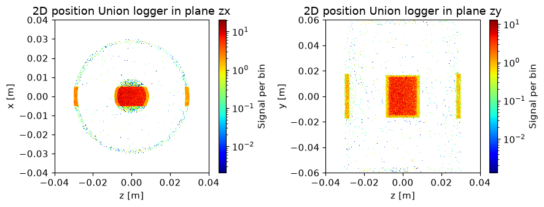

<!DOCTYPE html>


<html lang="en" data-content_root="../" >

  <head>
    <meta charset="utf-8" />
    <meta name="viewport" content="width=device-width, initial-scale=1.0" /><meta name="viewport" content="width=device-width, initial-scale=1" />

    <title>Union tagging system &#8212; McStasScript  documentation</title>
  
  
  
  <script data-cfasync="false">
    document.documentElement.dataset.mode = localStorage.getItem("mode") || "";
    document.documentElement.dataset.theme = localStorage.getItem("theme") || "";
  </script>
  <!--
    this give us a css class that will be invisible only if js is disabled
  -->
  <noscript>
    <style>
      .pst-js-only { display: none !important; }

    </style>
  </noscript>
  
  <!-- Loaded before other Sphinx assets -->
  <link href="../_static/styles/theme.css?digest=90905a2f556bf617f1a9" rel="stylesheet" />
<link href="../_static/styles/pydata-sphinx-theme.css?digest=90905a2f556bf617f1a9" rel="stylesheet" />

    <link rel="stylesheet" type="text/css" href="../_static/pygments.css?v=8f2a1f02" />
    <link rel="stylesheet" type="text/css" href="../_static/styles/sphinx-book-theme.css?v=4418a689" />
    <link rel="stylesheet" type="text/css" href="../_static/mystnb.11b39860a7a0cbfd473a3ad8a317855267ff0bd372690045ca344a6b62be495e.css" />
  
  <!-- So that users can add custom icons -->
  <script defer src="../_static/scripts/fontawesome.js?digest=90905a2f556bf617f1a9"></script>
  <!-- Pre-loaded scripts that we'll load fully later -->
  <link rel="preload" as="script" href="../_static/scripts/bootstrap.js?digest=90905a2f556bf617f1a9" />
<link rel="preload" as="script" href="../_static/scripts/pydata-sphinx-theme.js?digest=90905a2f556bf617f1a9" />

    <script src="../_static/documentation_options.js?v=9eb32ce0"></script>
    <script src="../_static/doctools.js?v=fd6eb6e6"></script>
    <script src="../_static/sphinx_highlight.js?v=6ffebe34"></script>
    <script src="../_static/scripts/sphinx-book-theme.js?v=fab101a9"></script>
    <script>DOCUMENTATION_OPTIONS.pagename = 'tutorial/Union_tutorial_7_Tagging_history';</script>
    <script>DOCUMENTATION_OPTIONS.search_as_you_type = false;</script>
    <link rel="index" title="Index" href="../genindex.html" />
    <link rel="search" title="Search" href="../search.html" />
    <link rel="next" title="mcstasscript" href="../_autosummary/mcstasscript.html" />
    <link rel="prev" title="Advanced geometry component concepts: Exit geometry and number of activations" href="Union_tutorial_6_Exit_and_number_of_activations.html" />
  <meta name="viewport" content="width=device-width, initial-scale=1"/>
  <meta name="docsearch:language" content="en"/>
  <meta name="docsearch:version" content="" />
  
    
    <script src="../_static/searchtools.js"></script>
    <script src="../_static/language_data.js"></script>
    <script src="../searchindex.js"></script>
  
  </head>
  <body data-default-mode="">
  
  
  <div id="pst-skip-link" class="skip-link d-print-none"><a href="#main-content">Skip to main content</a></div>

  
  <div id="pst-scroll-pixel-helper"></div>
  
  <button type="button" class="btn rounded-pill" id="pst-back-to-top">
    <i class="fa-solid fa-arrow-up"></i>Back to top</button>
  
  
  
  
  <dialog id="pst-search-dialog">
    
<form class="bd-search d-flex align-items-center"
      action="../search.html"
      method="get">
  <i class="fa-solid fa-magnifying-glass"></i>
  <input type="search"
         class="form-control"
         name="q"
         placeholder="Search..."
         aria-label="Search..."
         autocomplete="off"
         autocorrect="off"
         autocapitalize="off"
         spellcheck="false"/>
  <span class="search-button__kbd-shortcut"><kbd class="kbd-shortcut__modifier">Ctrl</kbd>+<kbd>K</kbd></span>
</form>
  </dialog>

  <div class="pst-async-banner-revealer d-none">
  <aside id="bd-header-version-warning" class="d-none d-print-none" aria-label="Version warning"></aside>
</div>

  
    <header id="pst-header" class="bd-header navbar navbar-expand-lg bd-navbar d-print-none">
<div class="bd-header__inner bd-page-width">
  <button class="pst-navbar-icon sidebar-toggle primary-toggle" aria-label="Site navigation">
    <span class="fa-solid fa-bars"></span>
  </button>
  
  
  <div class="col-lg-9 navbar-header-items">
    
    
    <div class="navbar-header-items__end">
      
        <div class="navbar-item navbar-persistent--container">
          

<button class="btn search-button-field search-button__button pst-js-only" title="Search" aria-label="Search" data-bs-placement="bottom" data-bs-toggle="tooltip">
 <i class="fa-solid fa-magnifying-glass"></i>
 <span class="search-button__default-text">Search</span>
 <span class="search-button__kbd-shortcut"><kbd class="kbd-shortcut__modifier">Ctrl</kbd>+<kbd class="kbd-shortcut__modifier">K</kbd></span>
</button>
        </div>
      
      
    </div>
    
  </div>
  
  
    <div class="navbar-persistent--mobile">

<button class="btn search-button-field search-button__button pst-js-only" title="Search" aria-label="Search" data-bs-placement="bottom" data-bs-toggle="tooltip">
 <i class="fa-solid fa-magnifying-glass"></i>
 <span class="search-button__default-text">Search</span>
 <span class="search-button__kbd-shortcut"><kbd class="kbd-shortcut__modifier">Ctrl</kbd>+<kbd class="kbd-shortcut__modifier">K</kbd></span>
</button>
    </div>
  

  
    <button class="pst-navbar-icon sidebar-toggle secondary-toggle" aria-label="On this page">
      <span class="fa-solid fa-outdent"></span>
    </button>
  
</div>

    </header>
  

  <div class="bd-container">
    <div class="bd-container__inner bd-page-width">
      
      
      
      <dialog id="pst-primary-sidebar-modal"></dialog>
      <div id="pst-primary-sidebar" class="bd-sidebar-primary bd-sidebar">
        

  
  <div class="sidebar-header-items sidebar-primary__section">
    
    
    
    
  </div>
  
    <div class="sidebar-primary-items__start sidebar-primary__section">
        <div class="sidebar-primary-item">

  
    
  

<a class="navbar-brand logo" href="../index.html">
  
  
  
  
  
  
    <p class="title logo__title">McStasScript  documentation</p>
  
</a></div>
        <div class="sidebar-primary-item">

<button class="btn search-button-field search-button__button pst-js-only" title="Search" aria-label="Search" data-bs-placement="bottom" data-bs-toggle="tooltip">
 <i class="fa-solid fa-magnifying-glass"></i>
 <span class="search-button__default-text">Search</span>
 <span class="search-button__kbd-shortcut"><kbd class="kbd-shortcut__modifier">Ctrl</kbd>+<kbd class="kbd-shortcut__modifier">K</kbd></span>
</button></div>
        <div class="sidebar-primary-item"><nav class="bd-links bd-docs-nav" aria-label="Main">
    <div class="bd-toc-item navbar-nav active">
        <p aria-level="2" class="caption" role="heading"><span class="caption-text">Getting started</span></p>
<ul class="nav bd-sidenav">
<li class="toctree-l1"><a class="reference internal" href="../getting_started/overview.html">Overview</a></li>
<li class="toctree-l1"><a class="reference internal" href="../getting_started/installation.html">Installation</a></li>
<li class="toctree-l1"><a class="reference internal" href="../getting_started/version_history.html">Version history</a></li>
<li class="toctree-l1"><a class="reference internal" href="../getting_started/quick_start.html">Quick start</a></li>
</ul>
<p aria-level="2" class="caption" role="heading"><span class="caption-text">User guide</span></p>
<ul class="nav bd-sidenav">
<li class="toctree-l1"><a class="reference internal" href="../user_guide/instrument_object.html">Instrument object</a></li>
<li class="toctree-l1"><a class="reference internal" href="../user_guide/component_object.html">Component object</a></li>
<li class="toctree-l1"><a class="reference internal" href="../user_guide/parameters_and_variables.html">Parameters and variables</a></li>
<li class="toctree-l1"><a class="reference internal" href="../user_guide/data.html">Data</a></li>
<li class="toctree-l1"><a class="reference internal" href="../user_guide/plotting.html">Plotting</a></li>
<li class="toctree-l1"><a class="reference internal" href="../user_guide/functions.html">Functions</a></li>
<li class="toctree-l1"><a class="reference internal" href="../user_guide/widgets.html">Widgets</a></li>
<li class="toctree-l1"><a class="reference internal" href="../user_guide/instrument_reader.html">Instrument reader</a></li>
</ul>
<p aria-level="2" class="caption" role="heading"><span class="caption-text">McStasScript Tutorial</span></p>
<ul class="nav bd-sidenav">
<li class="toctree-l1"><a class="reference internal" href="McStasScript_tutorial_1_the_basics.html">McStasScript introduction</a></li>
<li class="toctree-l1"><a class="reference internal" href="McStasScript_tutorial_2_SPLIT.html">Advanced McStas features:  SPLIT</a></li>
<li class="toctree-l1"><a class="reference internal" href="McStasScript_tutorial_3_EXTEND_and_WHEN.html">Advanced McStas features: EXTEND and WHEN</a></li>
<li class="toctree-l1"><a class="reference internal" href="McStasScript_tutorial_4_JUMP.html">Advanced McStas features: JUMP</a></li>
<li class="toctree-l1"><a class="reference internal" href="McStasScript_tutorial_5_MCPL_bridges.html">Dynamic instrument cuts with MCPL bridges</a></li>
<li class="toctree-l1"><a class="reference internal" href="McStasScript_tutorial_6_Diagnostics.html">Diagnostics</a></li>
</ul>
<p aria-level="2" class="caption" role="heading"><span class="caption-text">McStas Union Tutorial</span></p>
<ul class="current nav bd-sidenav">
<li class="toctree-l1"><a class="reference internal" href="Union_tutorial_1_processes_and_materials.html">The Union components</a></li>
<li class="toctree-l1"><a class="reference internal" href="Union_tutorial_2_geometry.html">Advanced geometry using the Union components</a></li>
<li class="toctree-l1"><a class="reference internal" href="Union_tutorial_3_loggers.html">Visualizing what happens in Union master</a></li>
<li class="toctree-l1"><a class="reference internal" href="Union_tutorial_4_conditionals.html">Using conditional component to modify loggers</a></li>
<li class="toctree-l1"><a class="reference internal" href="Union_tutorial_5_masks.html">Union tutorial on masks</a></li>
<li class="toctree-l1"><a class="reference internal" href="Union_tutorial_6_Exit_and_number_of_activations.html">Advanced geometry component concepts: Exit geometry and number of activations</a></li>
<li class="toctree-l1 current active"><a class="current reference internal" href="#">Union tagging system</a></li>
</ul>
<p aria-level="2" class="caption" role="heading"><span class="caption-text">Reference</span></p>
<ul class="nav bd-sidenav">
<li class="toctree-l1"><a class="reference internal" href="../_autosummary/mcstasscript.html">mcstasscript</a></li>
<li class="toctree-l1 has-children"><a class="reference internal" href="../_autosummary/mcstasscript.data.html">mcstasscript.data</a><details><summary><span class="toctree-toggle" role="presentation"><i class="fa-solid fa-chevron-down"></i></span></summary><ul>
<li class="toctree-l2 has-children"><a class="reference internal" href="../_autosummary/mcstasscript.data.MCPLDataFormat.html">mcstasscript.data.MCPLDataFormat</a><details><summary><span class="toctree-toggle" role="presentation"><i class="fa-solid fa-chevron-down"></i></span></summary><ul>
<li class="toctree-l3"><a class="reference internal" href="../_autosummary/mcstasscript.data.MCPLDataFormat.MCPLDataFormat.html">mcstasscript.data.MCPLDataFormat.MCPLDataFormat</a></li>
</ul>
</details></li>
<li class="toctree-l2 has-children"><a class="reference internal" href="../_autosummary/mcstasscript.data.McStasDataFormat.html">mcstasscript.data.McStasDataFormat</a><details><summary><span class="toctree-toggle" role="presentation"><i class="fa-solid fa-chevron-down"></i></span></summary><ul>
<li class="toctree-l3"><a class="reference internal" href="../_autosummary/mcstasscript.data.McStasDataFormat.McStasFormat.html">mcstasscript.data.McStasDataFormat.McStasFormat</a></li>
</ul>
</details></li>
<li class="toctree-l2 has-children"><a class="reference internal" href="../_autosummary/mcstasscript.data.data.html">mcstasscript.data.data</a><details><summary><span class="toctree-toggle" role="presentation"><i class="fa-solid fa-chevron-down"></i></span></summary><ul>
<li class="toctree-l3"><a class="reference internal" href="../_autosummary/mcstasscript.data.data.parse_coordinates.html">mcstasscript.data.data.parse_coordinates</a></li>
<li class="toctree-l3"><a class="reference internal" href="../_autosummary/mcstasscript.data.data.ComponentData.html">mcstasscript.data.data.ComponentData</a></li>
<li class="toctree-l3"><a class="reference internal" href="../_autosummary/mcstasscript.data.data.McStasData.html">mcstasscript.data.data.McStasData</a></li>
<li class="toctree-l3"><a class="reference internal" href="../_autosummary/mcstasscript.data.data.McStasDataBinned.html">mcstasscript.data.data.McStasDataBinned</a></li>
<li class="toctree-l3"><a class="reference internal" href="../_autosummary/mcstasscript.data.data.McStasDataEvent.html">mcstasscript.data.data.McStasDataEvent</a></li>
<li class="toctree-l3"><a class="reference internal" href="../_autosummary/mcstasscript.data.data.McStasMetaData.html">mcstasscript.data.data.McStasMetaData</a></li>
<li class="toctree-l3"><a class="reference internal" href="../_autosummary/mcstasscript.data.data.McStasPlotOptions.html">mcstasscript.data.data.McStasPlotOptions</a></li>
</ul>
</details></li>
<li class="toctree-l2 has-children"><a class="reference internal" href="../_autosummary/mcstasscript.data.pyvinylData.html">mcstasscript.data.pyvinylData</a><details><summary><span class="toctree-toggle" role="presentation"><i class="fa-solid fa-chevron-down"></i></span></summary><ul>
<li class="toctree-l3"><a class="reference internal" href="../_autosummary/mcstasscript.data.pyvinylData.pyvinylMCPLData.html">mcstasscript.data.pyvinylData.pyvinylMCPLData</a></li>
<li class="toctree-l3"><a class="reference internal" href="../_autosummary/mcstasscript.data.pyvinylData.pyvinylMcStasData.html">mcstasscript.data.pyvinylData.pyvinylMcStasData</a></li>
</ul>
</details></li>
</ul>
</details></li>
<li class="toctree-l1 has-children"><a class="reference internal" href="../_autosummary/mcstasscript.instr_reader.html">mcstasscript.instr_reader</a><details><summary><span class="toctree-toggle" role="presentation"><i class="fa-solid fa-chevron-down"></i></span></summary><ul>
<li class="toctree-l2 has-children"><a class="reference internal" href="../_autosummary/mcstasscript.instr_reader.control.html">mcstasscript.instr_reader.control</a><details><summary><span class="toctree-toggle" role="presentation"><i class="fa-solid fa-chevron-down"></i></span></summary><ul>
<li class="toctree-l3"><a class="reference internal" href="../_autosummary/mcstasscript.instr_reader.control.InstrumentReader.html">mcstasscript.instr_reader.control.InstrumentReader</a></li>
</ul>
</details></li>
<li class="toctree-l2 has-children"><a class="reference internal" href="../_autosummary/mcstasscript.instr_reader.read_declare.html">mcstasscript.instr_reader.read_declare</a><details><summary><span class="toctree-toggle" role="presentation"><i class="fa-solid fa-chevron-down"></i></span></summary><ul>
<li class="toctree-l3"><a class="reference internal" href="../_autosummary/mcstasscript.instr_reader.read_declare.DeclareReader.html">mcstasscript.instr_reader.read_declare.DeclareReader</a></li>
</ul>
</details></li>
<li class="toctree-l2 has-children"><a class="reference internal" href="../_autosummary/mcstasscript.instr_reader.read_definition.html">mcstasscript.instr_reader.read_definition</a><details><summary><span class="toctree-toggle" role="presentation"><i class="fa-solid fa-chevron-down"></i></span></summary><ul>
<li class="toctree-l3"><a class="reference internal" href="../_autosummary/mcstasscript.instr_reader.read_definition.DefinitionReader.html">mcstasscript.instr_reader.read_definition.DefinitionReader</a></li>
</ul>
</details></li>
<li class="toctree-l2 has-children"><a class="reference internal" href="../_autosummary/mcstasscript.instr_reader.read_finally.html">mcstasscript.instr_reader.read_finally</a><details><summary><span class="toctree-toggle" role="presentation"><i class="fa-solid fa-chevron-down"></i></span></summary><ul>
<li class="toctree-l3"><a class="reference internal" href="../_autosummary/mcstasscript.instr_reader.read_finally.FinallyReader.html">mcstasscript.instr_reader.read_finally.FinallyReader</a></li>
</ul>
</details></li>
<li class="toctree-l2 has-children"><a class="reference internal" href="../_autosummary/mcstasscript.instr_reader.read_initialize.html">mcstasscript.instr_reader.read_initialize</a><details><summary><span class="toctree-toggle" role="presentation"><i class="fa-solid fa-chevron-down"></i></span></summary><ul>
<li class="toctree-l3"><a class="reference internal" href="../_autosummary/mcstasscript.instr_reader.read_initialize.InitializeReader.html">mcstasscript.instr_reader.read_initialize.InitializeReader</a></li>
</ul>
</details></li>
<li class="toctree-l2 has-children"><a class="reference internal" href="../_autosummary/mcstasscript.instr_reader.read_trace.html">mcstasscript.instr_reader.read_trace</a><details><summary><span class="toctree-toggle" role="presentation"><i class="fa-solid fa-chevron-down"></i></span></summary><ul>
<li class="toctree-l3"><a class="reference internal" href="../_autosummary/mcstasscript.instr_reader.read_trace.TraceReader.html">mcstasscript.instr_reader.read_trace.TraceReader</a></li>
</ul>
</details></li>
<li class="toctree-l2 has-children"><a class="reference internal" href="../_autosummary/mcstasscript.instr_reader.read_uservars.html">mcstasscript.instr_reader.read_uservars</a><details><summary><span class="toctree-toggle" role="presentation"><i class="fa-solid fa-chevron-down"></i></span></summary><ul>
<li class="toctree-l3"><a class="reference internal" href="../_autosummary/mcstasscript.instr_reader.read_uservars.UservarsReader.html">mcstasscript.instr_reader.read_uservars.UservarsReader</a></li>
</ul>
</details></li>
<li class="toctree-l2 has-children"><a class="reference internal" href="../_autosummary/mcstasscript.instr_reader.util.html">mcstasscript.instr_reader.util</a><details><summary><span class="toctree-toggle" role="presentation"><i class="fa-solid fa-chevron-down"></i></span></summary><ul>
<li class="toctree-l3"><a class="reference internal" href="../_autosummary/mcstasscript.instr_reader.util.SectionReader.html">mcstasscript.instr_reader.util.SectionReader</a></li>
</ul>
</details></li>
</ul>
</details></li>
<li class="toctree-l1 has-children"><a class="reference internal" href="../_autosummary/mcstasscript.interface.html">mcstasscript.interface</a><details><summary><span class="toctree-toggle" role="presentation"><i class="fa-solid fa-chevron-down"></i></span></summary><ul>
<li class="toctree-l2 has-children"><a class="reference internal" href="../_autosummary/mcstasscript.interface.functions.html">mcstasscript.interface.functions</a><details><summary><span class="toctree-toggle" role="presentation"><i class="fa-solid fa-chevron-down"></i></span></summary><ul>
<li class="toctree-l3"><a class="reference internal" href="../_autosummary/mcstasscript.interface.functions.load_data.html">mcstasscript.interface.functions.load_data</a></li>
<li class="toctree-l3"><a class="reference internal" href="../_autosummary/mcstasscript.interface.functions.load_metadata.html">mcstasscript.interface.functions.load_metadata</a></li>
<li class="toctree-l3"><a class="reference internal" href="../_autosummary/mcstasscript.interface.functions.load_monitor.html">mcstasscript.interface.functions.load_monitor</a></li>
<li class="toctree-l3"><a class="reference internal" href="../_autosummary/mcstasscript.interface.functions.name_plot_options.html">mcstasscript.interface.functions.name_plot_options</a></li>
<li class="toctree-l3"><a class="reference internal" href="../_autosummary/mcstasscript.interface.functions.name_search.html">mcstasscript.interface.functions.name_search</a></li>
<li class="toctree-l3"><a class="reference internal" href="../_autosummary/mcstasscript.interface.functions.Configurator.html">mcstasscript.interface.functions.Configurator</a></li>
</ul>
</details></li>
<li class="toctree-l2 has-children"><a class="reference internal" href="../_autosummary/mcstasscript.interface.instr.html">mcstasscript.interface.instr</a><details><summary><span class="toctree-toggle" role="presentation"><i class="fa-solid fa-chevron-down"></i></span></summary><ul>
<li class="toctree-l3"><a class="reference internal" href="../_autosummary/mcstasscript.interface.instr.McCode_instr.html">mcstasscript.interface.instr.McCode_instr</a></li>
<li class="toctree-l3"><a class="reference internal" href="../_autosummary/mcstasscript.interface.instr.McStas_instr.html">mcstasscript.interface.instr.McStas_instr</a></li>
<li class="toctree-l3"><a class="reference internal" href="../_autosummary/mcstasscript.interface.instr.McXtrace_instr.html">mcstasscript.interface.instr.McXtrace_instr</a></li>
</ul>
</details></li>
<li class="toctree-l2 has-children"><a class="reference internal" href="../_autosummary/mcstasscript.interface.plotter.html">mcstasscript.interface.plotter</a><details><summary><span class="toctree-toggle" role="presentation"><i class="fa-solid fa-chevron-down"></i></span></summary><ul>
<li class="toctree-l3"><a class="reference internal" href="../_autosummary/mcstasscript.interface.plotter.make_animation.html">mcstasscript.interface.plotter.make_animation</a></li>
<li class="toctree-l3"><a class="reference internal" href="../_autosummary/mcstasscript.interface.plotter.make_plot.html">mcstasscript.interface.plotter.make_plot</a></li>
<li class="toctree-l3"><a class="reference internal" href="../_autosummary/mcstasscript.interface.plotter.make_sub_plot.html">mcstasscript.interface.plotter.make_sub_plot</a></li>
</ul>
</details></li>
<li class="toctree-l2 has-children"><a class="reference internal" href="../_autosummary/mcstasscript.interface.reader.html">mcstasscript.interface.reader</a><details><summary><span class="toctree-toggle" role="presentation"><i class="fa-solid fa-chevron-down"></i></span></summary><ul>
<li class="toctree-l3"><a class="reference internal" href="../_autosummary/mcstasscript.interface.reader.McStas_file.html">mcstasscript.interface.reader.McStas_file</a></li>
</ul>
</details></li>
</ul>
</details></li>
<li class="toctree-l1 has-children"><a class="reference internal" href="../_autosummary/mcstasscript.jb_interface.html">mcstasscript.jb_interface</a><details><summary><span class="toctree-toggle" role="presentation"><i class="fa-solid fa-chevron-down"></i></span></summary><ul>
<li class="toctree-l2 has-children"><a class="reference internal" href="../_autosummary/mcstasscript.jb_interface.plot_interface.html">mcstasscript.jb_interface.plot_interface</a><details><summary><span class="toctree-toggle" role="presentation"><i class="fa-solid fa-chevron-down"></i></span></summary><ul>
<li class="toctree-l3"><a class="reference internal" href="../_autosummary/mcstasscript.jb_interface.plot_interface.ColormapDropdown.html">mcstasscript.jb_interface.plot_interface.ColormapDropdown</a></li>
<li class="toctree-l3"><a class="reference internal" href="../_autosummary/mcstasscript.jb_interface.plot_interface.LogCheckbox.html">mcstasscript.jb_interface.plot_interface.LogCheckbox</a></li>
<li class="toctree-l3"><a class="reference internal" href="../_autosummary/mcstasscript.jb_interface.plot_interface.MonitorDropdown.html">mcstasscript.jb_interface.plot_interface.MonitorDropdown</a></li>
<li class="toctree-l3"><a class="reference internal" href="../_autosummary/mcstasscript.jb_interface.plot_interface.OrdersOfMagField.html">mcstasscript.jb_interface.plot_interface.OrdersOfMagField</a></li>
<li class="toctree-l3"><a class="reference internal" href="../_autosummary/mcstasscript.jb_interface.plot_interface.PlotInterface.html">mcstasscript.jb_interface.plot_interface.PlotInterface</a></li>
</ul>
</details></li>
<li class="toctree-l2 has-children"><a class="reference internal" href="../_autosummary/mcstasscript.jb_interface.show_interface.html">mcstasscript.jb_interface.show_interface</a><details><summary><span class="toctree-toggle" role="presentation"><i class="fa-solid fa-chevron-down"></i></span></summary><ul>
<li class="toctree-l3"><a class="reference internal" href="../_autosummary/mcstasscript.jb_interface.show_interface.show.html">mcstasscript.jb_interface.show_interface.show</a></li>
<li class="toctree-l3"><a class="reference internal" href="../_autosummary/mcstasscript.jb_interface.show_interface.show_instrunent.html">mcstasscript.jb_interface.show_interface.show_instrunent</a></li>
<li class="toctree-l3"><a class="reference internal" href="../_autosummary/mcstasscript.jb_interface.show_interface.show_plot.html">mcstasscript.jb_interface.show_interface.show_plot</a></li>
</ul>
</details></li>
<li class="toctree-l2 has-children"><a class="reference internal" href="../_autosummary/mcstasscript.jb_interface.simulation_interface.html">mcstasscript.jb_interface.simulation_interface</a><details><summary><span class="toctree-toggle" role="presentation"><i class="fa-solid fa-chevron-down"></i></span></summary><ul>
<li class="toctree-l3"><a class="reference internal" href="../_autosummary/mcstasscript.jb_interface.simulation_interface.add_data.html">mcstasscript.jb_interface.simulation_interface.add_data</a></li>
<li class="toctree-l3"><a class="reference internal" href="../_autosummary/mcstasscript.jb_interface.simulation_interface.ParameterWidget.html">mcstasscript.jb_interface.simulation_interface.ParameterWidget</a></li>
<li class="toctree-l3"><a class="reference internal" href="../_autosummary/mcstasscript.jb_interface.simulation_interface.SimInterface.html">mcstasscript.jb_interface.simulation_interface.SimInterface</a></li>
</ul>
</details></li>
<li class="toctree-l2 has-children"><a class="reference internal" href="../_autosummary/mcstasscript.jb_interface.widget_helpers.html">mcstasscript.jb_interface.widget_helpers</a><details><summary><span class="toctree-toggle" role="presentation"><i class="fa-solid fa-chevron-down"></i></span></summary><ul>
<li class="toctree-l3"><a class="reference internal" href="../_autosummary/mcstasscript.jb_interface.widget_helpers.get_parameter_default.html">mcstasscript.jb_interface.widget_helpers.get_parameter_default</a></li>
<li class="toctree-l3"><a class="reference internal" href="../_autosummary/mcstasscript.jb_interface.widget_helpers.parameter_has_default.html">mcstasscript.jb_interface.widget_helpers.parameter_has_default</a></li>
<li class="toctree-l3"><a class="reference internal" href="../_autosummary/mcstasscript.jb_interface.widget_helpers.HiddenPrints.html">mcstasscript.jb_interface.widget_helpers.HiddenPrints</a></li>
</ul>
</details></li>
</ul>
</details></li>
<li class="toctree-l1"><a class="reference internal" href="../_autosummary/mcstasscript.tools.html">mcstasscript.tools</a></li>
</ul>
<p aria-level="2" class="caption" role="heading"><span class="caption-text">Reference (libpyvinyl)</span></p>
<ul class="nav bd-sidenav">
<li class="toctree-l1"><a class="reference internal" href="../_autosummary/libpyvinyl.html">libpyvinyl</a></li>
</ul>

    </div>
</nav></div>
    </div>
  
  
  <div class="sidebar-primary-items__end sidebar-primary__section">
      <div class="sidebar-primary-item">
<div id="ethical-ad-placement"
      class="flat"
      data-ea-publisher="readthedocs"
      data-ea-type="readthedocs-sidebar"
      data-ea-manual="true">
</div></div>
  </div>


      </div>
      
      <main id="main-content" class="bd-main" role="main">
        
        

<div class="sbt-scroll-pixel-helper"></div>

          <div class="bd-content">
            <div class="bd-article-container">
              
              <div class="bd-header-article d-print-none">
<div class="header-article-items header-article__inner">
  
    <div class="header-article-items__start">
      
        <div class="header-article-item"><button class="sidebar-toggle primary-toggle btn btn-sm" title="Toggle primary sidebar" data-bs-placement="bottom" data-bs-toggle="tooltip">
  <span class="fa-solid fa-bars"></span>
</button></div>
      
    </div>
  
  
    <div class="header-article-items__end">
      
        <div class="header-article-item">

<div class="article-header-buttons">


<div class="dropdown dropdown-source-buttons">
  <button class="btn dropdown-toggle" type="button" data-bs-toggle="dropdown" aria-expanded="false" aria-label="Source repositories">
    <i class="fab fa-github"></i>
  </button>
  <ul class="dropdown-menu">
      
      
      
      <li><a href="https://github.com/PaNOSC-ViNYL/McStasScript" target="_blank"
   class="btn btn-sm btn-source-repository-button dropdown-item"
   title="Source repository"
   data-bs-placement="left" data-bs-toggle="tooltip"
>
  

<span class="btn__icon-container">
  <i class="fab fa-github"></i>
  </span>
<span class="btn__text-container">Repository</span>
</a>
</li>
      
      
      
      
      <li><a href="https://github.com/PaNOSC-ViNYL/McStasScript/edit/master/docs/tutorial/Union_tutorial_7_Tagging_history.ipynb" target="_blank"
   class="btn btn-sm btn-source-edit-button dropdown-item"
   title="Suggest edit"
   data-bs-placement="left" data-bs-toggle="tooltip"
>
  

<span class="btn__icon-container">
  <i class="fas fa-pencil-alt"></i>
  </span>
<span class="btn__text-container">Suggest edit</span>
</a>
</li>
      
      
      
      
      <li><a href="https://github.com/PaNOSC-ViNYL/McStasScript/issues/new?title=Issue%20on%20page%20%2Ftutorial/Union_tutorial_7_Tagging_history.html&body=Your%20issue%20content%20here." target="_blank"
   class="btn btn-sm btn-source-issues-button dropdown-item"
   title="Open an issue"
   data-bs-placement="left" data-bs-toggle="tooltip"
>
  

<span class="btn__icon-container">
  <i class="fas fa-lightbulb"></i>
  </span>
<span class="btn__text-container">Open issue</span>
</a>
</li>
      
  </ul>
</div>


<div class="dropdown dropdown-download-buttons">
  <button class="btn dropdown-toggle" type="button" data-bs-toggle="dropdown" aria-expanded="false" aria-label="Download this page">
    <i class="fas fa-download"></i>
  </button>
  <ul class="dropdown-menu">
      
      
      
      <li><a href="../_sources/tutorial/Union_tutorial_7_Tagging_history.ipynb" target="_blank"
   class="btn btn-sm btn-download-source-button dropdown-item"
   title="Download source file"
   data-bs-placement="left" data-bs-toggle="tooltip"
>
  

<span class="btn__icon-container">
  <i class="fas fa-file"></i>
  </span>
<span class="btn__text-container">.ipynb</span>
</a>
</li>
      
      
      
      
      <li>
<button onclick="window.print()"
  class="btn btn-sm btn-download-pdf-button dropdown-item"
  title="Print to PDF"
  data-bs-placement="left" data-bs-toggle="tooltip"
>
  

<span class="btn__icon-container">
  <i class="fas fa-file-pdf"></i>
  </span>
<span class="btn__text-container">.pdf</span>
</button>
</li>
      
  </ul>
</div>


<button onclick="toggleFullScreen()"
  class="btn btn-sm btn-fullscreen-button pst-navbar-icon"
  title="Fullscreen mode"
  data-bs-placement="bottom" data-bs-toggle="tooltip"
>
  

<span class="btn__icon-container">
  <i class="fas fa-expand"></i>
  </span>

</button>


<div class="theme-switch-container dropdown pst-js-only" data-bs-toggle="tooltip" data-bs-placement="bottom" title="Color mode">
  <button class="btn btn-sm nav-link pst-navbar-icon theme-switch-button dropdown-toggle" aria-label="Color mode" data-bs-toggle="dropdown">
    <i class="theme-switch fa-solid fa-sun fa-lg fa-fw" data-mode="light" title="Light"></i>
    <i class="theme-switch fa-solid fa-moon fa-lg fa-fw" data-mode="dark" title="Dark"></i>
    <i class="theme-switch fa-solid fa-circle-half-stroke fa-lg fa-fw" data-mode="auto" title="System Settings"></i>
  </button>
  <ul class="dropdown-menu dropdown-menu-end">
    <li><button class="dropdown-item d-flex align-items-center theme-change-button" data-mode="auto"><i class="fa-solid fa-circle-half-stroke fa-lg fa-fw me-1"></i>System Settings</button></li>
    <li><button class="dropdown-item d-flex align-items-center theme-change-button" data-mode="light"><i class="fa-solid fa-sun fa-lg fa-fw me-1"></i>Light</button></li>
    <li><button class="dropdown-item d-flex align-items-center theme-change-button" data-mode="dark"><i class="fa-solid fa-moon fa-lg fa-fw me-1"></i>Dark</button></li>
  </ul>
</div>


<button class="btn btn-sm pst-navbar-icon search-button search-button__button pst-js-only" title="Search" aria-label="Search" data-bs-placement="bottom" data-bs-toggle="tooltip">
    <i class="fa-solid fa-magnifying-glass fa-lg"></i>
</button>
<button class="sidebar-toggle secondary-toggle btn btn-sm pst-navbar-icon" title="Toggle secondary sidebar" data-bs-placement="bottom" data-bs-toggle="tooltip">
    <span class="fa-solid fa-list"></span>
</button>
</div></div>
      
    </div>
  
</div>
</div>
              
              

<div id="jb-print-docs-body" class="onlyprint">
    <h1>Union tagging system</h1>
    <!-- Table of contents -->
    <div id="print-main-content">
        <div id="jb-print-toc">
            
            <div>
                <h2> Contents </h2>
            </div>
            <nav aria-label="Page">
                <ul class="pst-show_toc_level nav section-nav flex-column">
<li class="toc-h2 nav-item toc-entry"><a class="reference internal nav-link" href="#adding-the-union-master-with-tagging">Adding the Union_master with tagging</a></li>
<li class="toc-h2 nav-item toc-entry"><a class="reference internal nav-link" href="#finding-the-history-file">Finding the history file</a></li>
<li class="toc-h2 nav-item toc-entry"><a class="reference internal nav-link" href="#interpreting-the-histories">Interpreting the histories</a></li>
<li class="toc-h2 nav-item toc-entry"><a class="reference internal nav-link" href="#use-conditional-component-to-filter-tagging">Use conditional component to filter tagging</a><ul class="pst-show_toc_level nav section-nav flex-column">
<li class="toc-h3 nav-item toc-entry"><a class="reference internal nav-link" href="#interpreting-the-data">Interpreting the data</a></li>
</ul>
</li>
</ul>
            </nav>
        </div>
    </div>
</div>

              
                
<div id="searchbox"></div>
                <article class="bd-article">
                  
  <section id="union-tagging-system">
<h1>Union tagging system<a class="headerlink" href="#union-tagging-system" title="Link to this heading">#</a></h1>
<p>The <em>Union_master</em> is capable of recording histories for each neutron in a tree like fashion and add the total intensities for each unique history together. At the end of the simulation these are sorted by intensity and written to file, and the top 20 are shown in the terminal. This system does not work with MPI, if MPI is used only part of the data is written to disk. The system can take up a large amount of memory when used, so it is disabled per default.</p>
<p>First we set up a simple instrument with sample, container and a layer of cryostat.</p>
<div class="cell docutils container">
<div class="cell_input docutils container">
<div class="highlight-ipython3 notranslate"><div class="highlight"><pre><span></span><span class="kn">import</span><span class="w"> </span><span class="nn">mcstasscript</span><span class="w"> </span><span class="k">as</span><span class="w"> </span><span class="nn">ms</span>
</pre></div>
</div>
</div>
</div>
<div class="cell docutils container">
<div class="cell_input docutils container">
<div class="highlight-ipython3 notranslate"><div class="highlight"><pre><span></span><span class="n">instrument</span> <span class="o">=</span> <span class="n">ms</span><span class="o">.</span><span class="n">McStas_instr</span><span class="p">(</span><span class="s2">&quot;python_tutorial&quot;</span><span class="p">,</span> <span class="n">input_path</span><span class="o">=</span><span class="s2">&quot;run_folder&quot;</span><span class="p">)</span>
</pre></div>
</div>
</div>
</div>
<div class="cell docutils container">
<div class="cell_input docutils container">
<div class="highlight-ipython3 notranslate"><div class="highlight"><pre><span></span><span class="k">if</span> <span class="n">instrument</span><span class="o">.</span><span class="n">mccode_version</span> <span class="o">==</span> <span class="mi">3</span><span class="p">:</span>
    <span class="n">init</span> <span class="o">=</span> <span class="n">instrument</span><span class="o">.</span><span class="n">add_component</span><span class="p">(</span><span class="s2">&quot;init&quot;</span><span class="p">,</span> <span class="s2">&quot;Union_init&quot;</span><span class="p">)</span> <span class="c1"># This component has to be called init</span>

<span class="n">Al_inc</span> <span class="o">=</span> <span class="n">instrument</span><span class="o">.</span><span class="n">add_component</span><span class="p">(</span><span class="s2">&quot;Al_inc&quot;</span><span class="p">,</span> <span class="s2">&quot;Incoherent_process&quot;</span><span class="p">)</span>
<span class="n">Al_inc</span><span class="o">.</span><span class="n">sigma</span> <span class="o">=</span> <span class="mf">0.0082</span>
<span class="n">Al_inc</span><span class="o">.</span><span class="n">unit_cell_volume</span> <span class="o">=</span> <span class="mf">66.4</span>

<span class="n">Al_pow</span> <span class="o">=</span> <span class="n">instrument</span><span class="o">.</span><span class="n">add_component</span><span class="p">(</span><span class="s2">&quot;Al_pow&quot;</span><span class="p">,</span> <span class="s2">&quot;Powder_process&quot;</span><span class="p">)</span>
<span class="n">Al_pow</span><span class="o">.</span><span class="n">reflections</span> <span class="o">=</span> <span class="s1">&#39;&quot;Al.laz&quot;&#39;</span>

<span class="n">Al</span> <span class="o">=</span> <span class="n">instrument</span><span class="o">.</span><span class="n">add_component</span><span class="p">(</span><span class="s2">&quot;Al&quot;</span><span class="p">,</span> <span class="s2">&quot;Union_make_material&quot;</span><span class="p">)</span>
<span class="n">Al</span><span class="o">.</span><span class="n">process_string</span> <span class="o">=</span> <span class="s1">&#39;&quot;Al_inc,Al_pow&quot;&#39;</span>
<span class="n">Al</span><span class="o">.</span><span class="n">my_absorption</span> <span class="o">=</span> <span class="mi">100</span><span class="o">*</span><span class="mf">0.231</span><span class="o">/</span><span class="mf">66.4</span> <span class="c1"># barns [m^2 E-28]*Å^3 [m^3 E-30]=[m E-2], factor 100</span>

<span class="n">Sample_inc</span> <span class="o">=</span> <span class="n">instrument</span><span class="o">.</span><span class="n">add_component</span><span class="p">(</span><span class="s2">&quot;Sample_inc&quot;</span><span class="p">,</span> <span class="s2">&quot;Incoherent_process&quot;</span><span class="p">)</span>
<span class="n">Sample_inc</span><span class="o">.</span><span class="n">sigma</span> <span class="o">=</span> <span class="mf">3.4176</span>
<span class="n">Sample_inc</span><span class="o">.</span><span class="n">unit_cell_volume</span> <span class="o">=</span> <span class="mf">1079.1</span>

<span class="n">Sample_pow</span> <span class="o">=</span> <span class="n">instrument</span><span class="o">.</span><span class="n">add_component</span><span class="p">(</span><span class="s2">&quot;Sample_pow&quot;</span><span class="p">,</span> <span class="s2">&quot;Powder_process&quot;</span><span class="p">)</span>
<span class="n">Sample_pow</span><span class="o">.</span><span class="n">reflections</span> <span class="o">=</span> <span class="s1">&#39;&quot;Na2Ca3Al2F14.laz&quot;&#39;</span>

<span class="n">Sample</span> <span class="o">=</span> <span class="n">instrument</span><span class="o">.</span><span class="n">add_component</span><span class="p">(</span><span class="s2">&quot;Sample&quot;</span><span class="p">,</span> <span class="s2">&quot;Union_make_material&quot;</span><span class="p">)</span>
<span class="n">Sample</span><span class="o">.</span><span class="n">process_string</span> <span class="o">=</span> <span class="s1">&#39;&quot;Sample_inc,Sample_pow&quot;&#39;</span>
<span class="n">Sample</span><span class="o">.</span><span class="n">my_absorption</span> <span class="o">=</span> <span class="mi">100</span><span class="o">*</span><span class="mf">2.9464</span><span class="o">/</span><span class="mf">1079.1</span>

<span class="n">src</span> <span class="o">=</span> <span class="n">instrument</span><span class="o">.</span><span class="n">add_component</span><span class="p">(</span><span class="s2">&quot;source&quot;</span><span class="p">,</span> <span class="s2">&quot;Source_div&quot;</span><span class="p">)</span>
<span class="n">src</span><span class="o">.</span><span class="n">xwidth</span> <span class="o">=</span> <span class="mf">0.01</span>
<span class="n">src</span><span class="o">.</span><span class="n">yheight</span> <span class="o">=</span> <span class="mf">0.035</span>
<span class="n">src</span><span class="o">.</span><span class="n">focus_aw</span> <span class="o">=</span> <span class="mf">0.01</span>
<span class="n">src</span><span class="o">.</span><span class="n">focus_ah</span> <span class="o">=</span> <span class="mf">0.01</span>
<span class="n">src</span><span class="o">.</span><span class="n">lambda0</span> <span class="o">=</span> <span class="n">instrument</span><span class="o">.</span><span class="n">add_parameter</span><span class="p">(</span><span class="s2">&quot;wavelength&quot;</span><span class="p">,</span> <span class="n">value</span><span class="o">=</span><span class="mf">5.0</span><span class="p">,</span>
                                       <span class="n">comment</span><span class="o">=</span><span class="s2">&quot;Wavelength in [Ang]&quot;</span><span class="p">)</span>
<span class="n">src</span><span class="o">.</span><span class="n">dlambda</span> <span class="o">=</span> <span class="s2">&quot;0.01*wavelength&quot;</span>
<span class="n">src</span><span class="o">.</span><span class="n">flux</span> <span class="o">=</span> <span class="mf">1E13</span>

<span class="n">sample_geometry</span> <span class="o">=</span> <span class="n">instrument</span><span class="o">.</span><span class="n">add_component</span><span class="p">(</span><span class="s2">&quot;sample_geometry&quot;</span><span class="p">,</span> <span class="s2">&quot;Union_cylinder&quot;</span><span class="p">)</span>
<span class="n">sample_geometry</span><span class="o">.</span><span class="n">yheight</span> <span class="o">=</span> <span class="mf">0.03</span>
<span class="n">sample_geometry</span><span class="o">.</span><span class="n">radius</span> <span class="o">=</span> <span class="mf">0.0075</span>
<span class="n">sample_geometry</span><span class="o">.</span><span class="n">material_string</span><span class="o">=</span><span class="s1">&#39;&quot;Sample&quot;&#39;</span> 
<span class="n">sample_geometry</span><span class="o">.</span><span class="n">priority</span> <span class="o">=</span> <span class="mi">100</span>
<span class="n">sample_geometry</span><span class="o">.</span><span class="n">set_AT</span><span class="p">([</span><span class="mi">0</span><span class="p">,</span><span class="mi">0</span><span class="p">,</span><span class="mi">1</span><span class="p">],</span> <span class="n">RELATIVE</span><span class="o">=</span><span class="n">src</span><span class="p">)</span>

<span class="n">container</span> <span class="o">=</span> <span class="n">instrument</span><span class="o">.</span><span class="n">add_component</span><span class="p">(</span><span class="s2">&quot;sample_container&quot;</span><span class="p">,</span> <span class="s2">&quot;Union_cylinder&quot;</span><span class="p">)</span>
<span class="n">container</span><span class="o">.</span><span class="n">set_RELATIVE</span><span class="p">(</span><span class="n">sample_geometry</span><span class="p">)</span>
<span class="n">container</span><span class="o">.</span><span class="n">yheight</span> <span class="o">=</span> <span class="mf">0.03</span><span class="o">+</span><span class="mf">0.003</span> <span class="c1"># 1.5 mm top and button</span>
<span class="n">container</span><span class="o">.</span><span class="n">radius</span> <span class="o">=</span> <span class="mf">0.0075</span> <span class="o">+</span> <span class="mf">0.0015</span> <span class="c1"># 1.5 mm sides of container</span>
<span class="n">container</span><span class="o">.</span><span class="n">material_string</span><span class="o">=</span><span class="s1">&#39;&quot;Al&quot;&#39;</span> 
<span class="n">container</span><span class="o">.</span><span class="n">priority</span> <span class="o">=</span> <span class="mi">99</span>

<span class="n">inner_wall</span> <span class="o">=</span> <span class="n">instrument</span><span class="o">.</span><span class="n">add_component</span><span class="p">(</span><span class="s2">&quot;cryostat_wall&quot;</span><span class="p">,</span> <span class="s2">&quot;Union_cylinder&quot;</span><span class="p">)</span>
<span class="n">inner_wall</span><span class="o">.</span><span class="n">set_AT</span><span class="p">([</span><span class="mi">0</span><span class="p">,</span><span class="mi">0</span><span class="p">,</span><span class="mi">0</span><span class="p">],</span> <span class="n">RELATIVE</span><span class="o">=</span><span class="n">sample_geometry</span><span class="p">)</span>
<span class="n">inner_wall</span><span class="o">.</span><span class="n">yheight</span> <span class="o">=</span> <span class="mf">0.12</span>
<span class="n">inner_wall</span><span class="o">.</span><span class="n">radius</span> <span class="o">=</span> <span class="mf">0.03</span>
<span class="n">inner_wall</span><span class="o">.</span><span class="n">material_string</span><span class="o">=</span><span class="s1">&#39;&quot;Al&quot;&#39;</span> 
<span class="n">inner_wall</span><span class="o">.</span><span class="n">priority</span> <span class="o">=</span> <span class="mi">80</span>

<span class="n">inner_wall_vac</span> <span class="o">=</span> <span class="n">instrument</span><span class="o">.</span><span class="n">add_component</span><span class="p">(</span><span class="s2">&quot;cryostat_wall_vacuum&quot;</span><span class="p">,</span> <span class="s2">&quot;Union_cylinder&quot;</span><span class="p">)</span>
<span class="n">inner_wall_vac</span><span class="o">.</span><span class="n">set_AT</span><span class="p">([</span><span class="mi">0</span><span class="p">,</span><span class="mi">0</span><span class="p">,</span><span class="mi">0</span><span class="p">],</span> <span class="n">RELATIVE</span><span class="o">=</span><span class="n">sample_geometry</span><span class="p">)</span>
<span class="n">inner_wall_vac</span><span class="o">.</span><span class="n">yheight</span> <span class="o">=</span> <span class="mf">0.12</span> <span class="o">-</span> <span class="mf">0.008</span>
<span class="n">inner_wall_vac</span><span class="o">.</span><span class="n">radius</span> <span class="o">=</span> <span class="mf">0.03</span> <span class="o">-</span> <span class="mf">0.002</span>
<span class="n">inner_wall_vac</span><span class="o">.</span><span class="n">material_string</span><span class="o">=</span><span class="s1">&#39;&quot;Vacuum&quot;&#39;</span> 
<span class="n">inner_wall_vac</span><span class="o">.</span><span class="n">priority</span> <span class="o">=</span> <span class="mi">81</span>

<span class="n">logger_zx</span> <span class="o">=</span> <span class="n">instrument</span><span class="o">.</span><span class="n">add_component</span><span class="p">(</span><span class="s2">&quot;logger_space_zx&quot;</span><span class="p">,</span> <span class="s2">&quot;Union_logger_2D_space&quot;</span><span class="p">)</span>
<span class="n">logger_zx</span><span class="o">.</span><span class="n">set_RELATIVE</span><span class="p">(</span><span class="n">sample_geometry</span><span class="p">)</span>
<span class="n">logger_zx</span><span class="o">.</span><span class="n">D_direction_1</span> <span class="o">=</span> <span class="s1">&#39;&quot;z&quot;&#39;</span>
<span class="n">logger_zx</span><span class="o">.</span><span class="n">D1_min</span> <span class="o">=</span> <span class="o">-</span><span class="mf">0.04</span>
<span class="n">logger_zx</span><span class="o">.</span><span class="n">D1_max</span> <span class="o">=</span> <span class="mf">0.04</span>
<span class="n">logger_zx</span><span class="o">.</span><span class="n">n1</span> <span class="o">=</span> <span class="mi">300</span>
<span class="n">logger_zx</span><span class="o">.</span><span class="n">D_direction_2</span> <span class="o">=</span> <span class="s1">&#39;&quot;x&quot;&#39;</span>
<span class="n">logger_zx</span><span class="o">.</span><span class="n">D2_min</span> <span class="o">=</span> <span class="o">-</span><span class="mf">0.04</span>
<span class="n">logger_zx</span><span class="o">.</span><span class="n">D2_max</span> <span class="o">=</span> <span class="mf">0.04</span>
<span class="n">logger_zx</span><span class="o">.</span><span class="n">n2</span> <span class="o">=</span> <span class="mi">300</span>
<span class="n">logger_zx</span><span class="o">.</span><span class="n">filename</span> <span class="o">=</span> <span class="s1">&#39;&quot;logger_zx.dat&quot;&#39;</span>

<span class="n">logger_zy</span> <span class="o">=</span> <span class="n">instrument</span><span class="o">.</span><span class="n">add_component</span><span class="p">(</span><span class="s2">&quot;logger_space_zy&quot;</span><span class="p">,</span> <span class="s2">&quot;Union_logger_2D_space&quot;</span><span class="p">)</span>
<span class="n">logger_zy</span><span class="o">.</span><span class="n">set_RELATIVE</span><span class="p">(</span><span class="n">sample_geometry</span><span class="p">)</span>
<span class="n">logger_zy</span><span class="o">.</span><span class="n">D_direction_1</span> <span class="o">=</span> <span class="s1">&#39;&quot;z&quot;&#39;</span>
<span class="n">logger_zy</span><span class="o">.</span><span class="n">D1_min</span> <span class="o">=</span> <span class="o">-</span><span class="mf">0.04</span>
<span class="n">logger_zy</span><span class="o">.</span><span class="n">D1_max</span> <span class="o">=</span> <span class="mf">0.04</span>
<span class="n">logger_zy</span><span class="o">.</span><span class="n">n1</span> <span class="o">=</span> <span class="mi">300</span>
<span class="n">logger_zy</span><span class="o">.</span><span class="n">D_direction_2</span> <span class="o">=</span> <span class="s1">&#39;&quot;y&quot;&#39;</span>
<span class="n">logger_zy</span><span class="o">.</span><span class="n">D2_min</span> <span class="o">=</span> <span class="o">-</span><span class="mf">0.06</span>
<span class="n">logger_zy</span><span class="o">.</span><span class="n">D2_max</span> <span class="o">=</span> <span class="mf">0.06</span>
<span class="n">logger_zy</span><span class="o">.</span><span class="n">n2</span> <span class="o">=</span> <span class="mi">300</span>
<span class="n">logger_zy</span><span class="o">.</span><span class="n">filename</span> <span class="o">=</span> <span class="s1">&#39;&quot;logger_zy.dat&quot;&#39;</span>
</pre></div>
</div>
</div>
</div>
<section id="adding-the-union-master-with-tagging">
<h2>Adding the Union_master with tagging<a class="headerlink" href="#adding-the-union-master-with-tagging" title="Link to this heading">#</a></h2>
<p>There are two important parameters to consider when setting a <em>Union_master</em> up for tagging:</p>
<ul class="simple">
<li><p>enable_tagging [default 0] 0 for disable, 1 for enable</p></li>
<li><p>history_limit [default 300000] Limit of unique histories recorded</p></li>
</ul>
<p>As the <em>Union_master</em> component records each ray in succession, their unique history is added to the history tree. If a ray takes the same path in the tree, the intensity gets added to that unique history. When the history limit is reached, the tree is not built out further, but if already recorded histories occur, their intensity is still added to the existing tree.</p>
<div class="cell docutils container">
<div class="cell_input docutils container">
<div class="highlight-ipython3 notranslate"><div class="highlight"><pre><span></span><span class="n">master</span> <span class="o">=</span> <span class="n">instrument</span><span class="o">.</span><span class="n">add_component</span><span class="p">(</span><span class="s2">&quot;master&quot;</span><span class="p">,</span> <span class="s2">&quot;Union_master&quot;</span><span class="p">)</span>
<span class="n">master</span><span class="o">.</span><span class="n">enable_tagging</span> <span class="o">=</span> <span class="mi">1</span>
<span class="n">master</span><span class="o">.</span><span class="n">history_limit</span> <span class="o">=</span> <span class="mi">300000</span>

<span class="k">if</span> <span class="n">instrument</span><span class="o">.</span><span class="n">mccode_version</span> <span class="o">==</span> <span class="mi">3</span><span class="p">:</span>
    <span class="n">stop</span> <span class="o">=</span> <span class="n">instrument</span><span class="o">.</span><span class="n">add_component</span><span class="p">(</span><span class="s2">&quot;stop&quot;</span><span class="p">,</span> <span class="s2">&quot;Union_stop&quot;</span><span class="p">)</span>
</pre></div>
</div>
</div>
</div>
<div class="cell tag_scroll-output docutils container">
<div class="cell_input docutils container">
<div class="highlight-ipython3 notranslate"><div class="highlight"><pre><span></span><span class="n">instrument</span><span class="o">.</span><span class="n">set_parameters</span><span class="p">(</span><span class="n">wavelength</span><span class="o">=</span><span class="mf">3.0</span><span class="p">)</span>
<span class="n">instrument</span><span class="o">.</span><span class="n">settings</span><span class="p">(</span><span class="n">ncount</span><span class="o">=</span><span class="mf">3E5</span><span class="p">,</span> <span class="n">output_path</span><span class="o">=</span><span class="s2">&quot;data_folder/union_tagging&quot;</span><span class="p">,</span> <span class="n">suppress_output</span><span class="o">=</span><span class="kc">True</span><span class="p">,</span> <span class="n">mpi</span><span class="o">=</span><span class="s2">&quot;auto&quot;</span><span class="p">)</span>

<span class="n">data</span> <span class="o">=</span> <span class="n">instrument</span><span class="o">.</span><span class="n">backengine</span><span class="p">()</span>
</pre></div>
</div>
</div>
</div>
<div class="cell docutils container">
<div class="cell_input docutils container">
<div class="highlight-ipython3 notranslate"><div class="highlight"><pre><span></span><span class="n">ms</span><span class="o">.</span><span class="n">name_plot_options</span><span class="p">(</span><span class="s2">&quot;logger_space_zx&quot;</span><span class="p">,</span> <span class="n">data</span><span class="p">,</span> <span class="n">log</span><span class="o">=</span><span class="kc">True</span><span class="p">,</span> <span class="n">orders_of_mag</span><span class="o">=</span><span class="mi">4</span><span class="p">)</span>
<span class="n">ms</span><span class="o">.</span><span class="n">name_plot_options</span><span class="p">(</span><span class="s2">&quot;logger_space_zy&quot;</span><span class="p">,</span> <span class="n">data</span><span class="p">,</span> <span class="n">log</span><span class="o">=</span><span class="kc">True</span><span class="p">,</span> <span class="n">orders_of_mag</span><span class="o">=</span><span class="mi">4</span><span class="p">)</span>
<span class="n">ms</span><span class="o">.</span><span class="n">make_sub_plot</span><span class="p">(</span><span class="n">data</span><span class="p">)</span>
</pre></div>
</div>
</div>
<div class="cell_output docutils container">

</div>
</div>
</section>
<section id="finding-the-history-file">
<h2>Finding the history file<a class="headerlink" href="#finding-the-history-file" title="Link to this heading">#</a></h2>
<p>A file called Union_history.dat is written in the run folder with all the unique histories. In some cases a bug happens that causes the file to be unreadable, for now the best fix is to rerun the simulation.</p>
<div class="cell tag_scroll-output docutils container">
<div class="cell_input docutils container">
<div class="highlight-ipython3 notranslate"><div class="highlight"><pre><span></span><span class="k">with</span> <span class="nb">open</span><span class="p">(</span><span class="s2">&quot;run_folder/union_history.dat&quot;</span><span class="p">,</span> <span class="s2">&quot;r&quot;</span><span class="p">,</span> <span class="n">errors</span><span class="o">=</span><span class="s2">&quot;ignore&quot;</span><span class="p">)</span> <span class="k">as</span> <span class="n">file</span><span class="p">:</span>
    <span class="n">instrument_string</span> <span class="o">=</span> <span class="n">file</span><span class="o">.</span><span class="n">read</span><span class="p">()</span>
    <span class="nb">print</span><span class="p">(</span><span class="n">instrument_string</span><span class="p">)</span>
</pre></div>
</div>
</div>
<div class="cell_output docutils container">
<div class="output stream highlight-myst-ansi notranslate"><div class="highlight"><pre><span></span>History file written by the McStas component Union_master 
When running with MPI, the results may be from just a single thread, meaning intensities are divided by number of threads
----- Description of the used volumes -----------------------------------------------------------------------------------
V0: Surrounding vacuum 
V1: sample_geometry  Material: Sample   P0: {;͘U P1: Sample_pow
V2: sample_container  Material: Al   P0: #NY P1: Al_pow
V3: cryostat_wall  Material: Al   P0: #NY P1: Al_pow
V4: cryostat_wall_vacuum  Material: Vacuum  
----- Histories sorted after intensity ----------------------------------------------------------------------------------
92727	 N I=1.977238E+04 	 V0 -&gt; V3 -&gt; V4 -&gt; V2 -&gt; V1 -&gt; V2 -&gt; V4 -&gt; V3 -&gt; V0 
25555	 N I=5.265391E+03 	 V0 -&gt; V3 -&gt; V4 -&gt; V2 -&gt; V1 -&gt; P1 -&gt; V2 -&gt; V4 -&gt; V3 -&gt; V0 
11435	 N I=2.438310E+03 	 V0 -&gt; V3 -&gt; V4 -&gt; V2 -&gt; V4 -&gt; V3 -&gt; V0 
8296	 N I=1.768974E+03 	 V0 -&gt; V3 -&gt; V4 -&gt; V3 -&gt; V0 
3527	 N I=7.778148E+02 	 V0 -&gt; V3 -&gt; V4 -&gt; V2 -&gt; V1 -&gt; P1 -&gt; P1 -&gt; V2 -&gt; V4 -&gt; V3 -&gt; V0 
1579	 N I=2.953617E+02 	 V0 -&gt; V3 -&gt; V4 -&gt; V2 -&gt; P1 -&gt; V4 -&gt; V3 -&gt; V0 
1155	 N I=1.992743E+02 	 V0 -&gt; V3 -&gt; P1 -&gt; V0 
885	 N I=1.789700E+02 	 V0 -&gt; V3 -&gt; V4 -&gt; V2 -&gt; V1 -&gt; V2 -&gt; V4 -&gt; V3 -&gt; P1 -&gt; V0 
680	 N I=1.366521E+02 	 V0 -&gt; V3 -&gt; V4 -&gt; V2 -&gt; V1 -&gt; V2 -&gt; P1 -&gt; V4 -&gt; V3 -&gt; V0 
591	 N I=1.197416E+02 	 V0 -&gt; V3 -&gt; V4 -&gt; V2 -&gt; P1 -&gt; V1 -&gt; V2 -&gt; V4 -&gt; V3 -&gt; V0 
473	 N I=1.101188E+02 	 V0 -&gt; V3 -&gt; P1 -&gt; V4 -&gt; V3 -&gt; V0 
498	 N I=1.006219E+02 	 V0 -&gt; V3 -&gt; V4 -&gt; V2 -&gt; V1 -&gt; P1 -&gt; P1 -&gt; P1 -&gt; V2 -&gt; V4 -&gt; V3 -&gt; V0 
433	 N I=9.026609E+01 	 V0 -&gt; V3 -&gt; V4 -&gt; V2 -&gt; V1 -&gt; P0 -&gt; V2 -&gt; V4 -&gt; V3 -&gt; V0 
234	 N I=5.305105E+01 	 V0 -&gt; V3 -&gt; V4 -&gt; V2 -&gt; V1 -&gt; P1 -&gt; V2 -&gt; P1 -&gt; V4 -&gt; V3 -&gt; V0 
271	 N I=4.126077E+01 	 V0 -&gt; V3 -&gt; V4 -&gt; V2 -&gt; V1 -&gt; P1 -&gt; V2 -&gt; V4 -&gt; V3 -&gt; P1 -&gt; V0 
200	 N I=3.028953E+01 	 V0 -&gt; V3 -&gt; V4 -&gt; V2 -&gt; V1 -&gt; V2 -&gt; V4 -&gt; V3 -&gt; P1 -&gt; V4 -&gt; V3 -&gt; V0 
125	 N I=2.514140E+01 	 V0 -&gt; V3 -&gt; V4 -&gt; V2 -&gt; V4 -&gt; V3 -&gt; P1 -&gt; V0 
128	 N I=2.305492E+01 	 V0 -&gt; V3 -&gt; V4 -&gt; V2 -&gt; V1 -&gt; P1 -&gt; V2 -&gt; V4 -&gt; V3 -&gt; P1 -&gt; V4 -&gt; V3 -&gt; V0 
139	 N I=2.260433E+01 	 V0 -&gt; V3 -&gt; V4 -&gt; V2 -&gt; V1 -&gt; V2 -&gt; P1 -&gt; V1 -&gt; V2 -&gt; V4 -&gt; V3 -&gt; V0 
109	 N I=2.128544E+01 	 V0 -&gt; V3 -&gt; V4 -&gt; V2 -&gt; P1 -&gt; V1 -&gt; P1 -&gt; V2 -&gt; V4 -&gt; V3 -&gt; V0 
69	 N I=1.420944E+01 	 V0 -&gt; V3 -&gt; V4 -&gt; V3 -&gt; P1 -&gt; V0 
64	 N I=1.344960E+01 	 V0 -&gt; V3 -&gt; V4 -&gt; V2 -&gt; V1 -&gt; P1 -&gt; P0 -&gt; V2 -&gt; V4 -&gt; V3 -&gt; V0 
57	 N I=1.105063E+01 	 V0 -&gt; V3 -&gt; V4 -&gt; V2 -&gt; V1 -&gt; P0 -&gt; P1 -&gt; V2 -&gt; V4 -&gt; V3 -&gt; V0 
37	 N I=9.892775E+00 	 V0 -&gt; V3 -&gt; V4 -&gt; V2 -&gt; V1 -&gt; P1 -&gt; P1 -&gt; V2 -&gt; V4 -&gt; V3 -&gt; P1 -&gt; V0 
60	 N I=8.933128E+00 	 V0 -&gt; V3 -&gt; V4 -&gt; V2 -&gt; V1 -&gt; P1 -&gt; V2 -&gt; P1 -&gt; V1 -&gt; V2 -&gt; V4 -&gt; V3 -&gt; V0 
46	 N I=8.439425E+00 	 V0 -&gt; V3 -&gt; P1 -&gt; P1 -&gt; V0 
16	 N I=7.378233E+00 	 V0 -&gt; V3 -&gt; V4 -&gt; V2 -&gt; V1 -&gt; P1 -&gt; P1 -&gt; V2 -&gt; V4 -&gt; V3 -&gt; P1 -&gt; V4 -&gt; V3 -&gt; V0 
71	 N I=7.319953E+00 	 V0 -&gt; V3 -&gt; V4 -&gt; V2 -&gt; V1 -&gt; P1 -&gt; P1 -&gt; P1 -&gt; P1 -&gt; V2 -&gt; V4 -&gt; V3 -&gt; V0 
30	 N I=4.543672E+00 	 V0 -&gt; V3 -&gt; V4 -&gt; V2 -&gt; V4 -&gt; V3 -&gt; P1 -&gt; V4 -&gt; V3 -&gt; V0 
26	 N I=4.492806E+00 	 V0 -&gt; V3 -&gt; P1 -&gt; P1 -&gt; V4 -&gt; V3 -&gt; V0 
25	 N I=3.859253E+00 	 V0 -&gt; V3 -&gt; V4 -&gt; V2 -&gt; V1 -&gt; V2 -&gt; V4 -&gt; V3 -&gt; P1 -&gt; P1 -&gt; V0 
13	 N I=3.755954E+00 	 V0 -&gt; V3 -&gt; V4 -&gt; V2 -&gt; V1 -&gt; P1 -&gt; P1 -&gt; V2 -&gt; P1 -&gt; V1 -&gt; V2 -&gt; V4 -&gt; V3 -&gt; V0 
22	 N I=3.595185E+00 	 V0 -&gt; V3 -&gt; V4 -&gt; V2 -&gt; P1 -&gt; P1 -&gt; V4 -&gt; V3 -&gt; V0 
22	 N I=3.388684E+00 	 V0 -&gt; V3 -&gt; V4 -&gt; V2 -&gt; V1 -&gt; V2 -&gt; V4 -&gt; V3 -&gt; P1 -&gt; P1 -&gt; V4 -&gt; V3 -&gt; V0 
29	 N I=3.386411E+00 	 V0 -&gt; V3 -&gt; V4 -&gt; V2 -&gt; V1 -&gt; P1 -&gt; P1 -&gt; V2 -&gt; P1 -&gt; V4 -&gt; V3 -&gt; V0 
22	 N I=3.332283E+00 	 V0 -&gt; V3 -&gt; V4 -&gt; V3 -&gt; P1 -&gt; V4 -&gt; V3 -&gt; V0 
16	 N I=3.185333E+00 	 V0 -&gt; V3 -&gt; P1 -&gt; V4 -&gt; V3 -&gt; P1 -&gt; V0 
11	 N I=2.639443E+00 	 V0 -&gt; V3 -&gt; V4 -&gt; V2 -&gt; V1 -&gt; P0 -&gt; P1 -&gt; P1 -&gt; V2 -&gt; V4 -&gt; V3 -&gt; V0 
21	 N I=2.460803E+00 	 V0 -&gt; V3 -&gt; V4 -&gt; V2 -&gt; V1 -&gt; V2 -&gt; P1 -&gt; V1 -&gt; P1 -&gt; V2 -&gt; V4 -&gt; V3 -&gt; V0 
15	 N I=2.403649E+00 	 V0 -&gt; V3 -&gt; V4 -&gt; V2 -&gt; P1 -&gt; V4 -&gt; V3 -&gt; P1 -&gt; V0 
15	 N I=2.313744E+00 	 V0 -&gt; V3 -&gt; V4 -&gt; V2 -&gt; P1 -&gt; P1 -&gt; V1 -&gt; V2 -&gt; V4 -&gt; V3 -&gt; V0 
13	 N I=1.867386E+00 	 V0 -&gt; V3 -&gt; V4 -&gt; V2 -&gt; P1 -&gt; V1 -&gt; P1 -&gt; P1 -&gt; V2 -&gt; V4 -&gt; V3 -&gt; V0 
16	 N I=1.668295E+00 	 V0 -&gt; V3 -&gt; V4 -&gt; V2 -&gt; V1 -&gt; P1 -&gt; V2 -&gt; P1 -&gt; V1 -&gt; P1 -&gt; V2 -&gt; V4 -&gt; V3 -&gt; V0 
11	 N I=1.652546E+00 	 V0 -&gt; V3 -&gt; V4 -&gt; V2 -&gt; V1 -&gt; V2 -&gt; P1 -&gt; P1 -&gt; V4 -&gt; V3 -&gt; V0 
9	 N I=1.526429E+00 	 V0 -&gt; V3 -&gt; V4 -&gt; V2 -&gt; V1 -&gt; V2 -&gt; P1 -&gt; V4 -&gt; V3 -&gt; P1 -&gt; V0 
5	 N I=1.474871E+00 	 V0 -&gt; V3 -&gt; V4 -&gt; V2 -&gt; V1 -&gt; P1 -&gt; V2 -&gt; P1 -&gt; P1 -&gt; V4 -&gt; V3 -&gt; V0 
6	 N I=1.350389E+00 	 V0 -&gt; V3 -&gt; P1 -&gt; V4 -&gt; V3 -&gt; P1 -&gt; V4 -&gt; V3 -&gt; V0 
10	 N I=1.276682E+00 	 V0 -&gt; V3 -&gt; V4 -&gt; V2 -&gt; V1 -&gt; P1 -&gt; P1 -&gt; P1 -&gt; P1 -&gt; P1 -&gt; V2 -&gt; V4 -&gt; V3 -&gt; V0 
8	 N I=1.208799E+00 	 V0 -&gt; V3 -&gt; V4 -&gt; V2 -&gt; V1 -&gt; V2 -&gt; V4 -&gt; V3 -&gt; P1 -&gt; V4 -&gt; V3 -&gt; P1 -&gt; V0 
7	 N I=1.163360E+00 	 V0 -&gt; V3 -&gt; V4 -&gt; V2 -&gt; P1 -&gt; V4 -&gt; V3 -&gt; P1 -&gt; V4 -&gt; V3 -&gt; V0 
3	 N I=9.866107E-01 	 V0 -&gt; V3 -&gt; V4 -&gt; V2 -&gt; V1 -&gt; P1 -&gt; V2 -&gt; P1 -&gt; V4 -&gt; V3 -&gt; P1 -&gt; V0 
5	 N I=9.797190E-01 	 V0 -&gt; V3 -&gt; V4 -&gt; V2 -&gt; V1 -&gt; P0 -&gt; V2 -&gt; P1 -&gt; V1 -&gt; V2 -&gt; V4 -&gt; V3 -&gt; V0 
5	 N I=8.916658E-01 	 V0 -&gt; V3 -&gt; V4 -&gt; V2 -&gt; P1 -&gt; V1 -&gt; V2 -&gt; V4 -&gt; V3 -&gt; P1 -&gt; V0 
4	 N I=8.410040E-01 	 V0 -&gt; V3 -&gt; P1 -&gt; P1 -&gt; V4 -&gt; V2 -&gt; V1 -&gt; V2 -&gt; V4 -&gt; V3 -&gt; V0 
5	 N I=8.012156E-01 	 V0 -&gt; V3 -&gt; V4 -&gt; V2 -&gt; V1 -&gt; V2 -&gt; P1 -&gt; P1 -&gt; V1 -&gt; V2 -&gt; V4 -&gt; V3 -&gt; V0 
3	 N I=7.812486E-01 	 V0 -&gt; V3 -&gt; V4 -&gt; V2 -&gt; V1 -&gt; V2 -&gt; P1 -&gt; V1 -&gt; P1 -&gt; P1 -&gt; V2 -&gt; V4 -&gt; V3 -&gt; V0 
6	 N I=7.617177E-01 	 V0 -&gt; V3 -&gt; V4 -&gt; V2 -&gt; V1 -&gt; V2 -&gt; V4 -&gt; V3 -&gt; P1 -&gt; V4 -&gt; V3 -&gt; P1 -&gt; V4 -&gt; V3 -&gt; V0 
4	 N I=7.524172E-01 	 V0 -&gt; V3 -&gt; V4 -&gt; V2 -&gt; V1 -&gt; P0 -&gt; V2 -&gt; P1 -&gt; V4 -&gt; V3 -&gt; V0 
5	 N I=7.429311E-01 	 V0 -&gt; V3 -&gt; V4 -&gt; V2 -&gt; V4 -&gt; V3 -&gt; P1 -&gt; P1 -&gt; V0 
2	 N I=7.304634E-01 	 V0 -&gt; V3 -&gt; V4 -&gt; V2 -&gt; P1 -&gt; V1 -&gt; P0 -&gt; P1 -&gt; V2 -&gt; V4 -&gt; V3 -&gt; V0 
1	 N I=6.743646E-01 	 V0 -&gt; V3 -&gt; V4 -&gt; V2 -&gt; V1 -&gt; P0 -&gt; P0 -&gt; P1 -&gt; V2 -&gt; V4 -&gt; V3 -&gt; V0 
1	 N I=6.573925E-01 	 V0 -&gt; V3 -&gt; V4 -&gt; V2 -&gt; V1 -&gt; P0 -&gt; P1 -&gt; P1 -&gt; V2 -&gt; V4 -&gt; V3 -&gt; P1 -&gt; V0 
3	 N I=6.496398E-01 	 V0 -&gt; V3 -&gt; V4 -&gt; V2 -&gt; V1 -&gt; P1 -&gt; V2 -&gt; P1 -&gt; P1 -&gt; V1 -&gt; V2 -&gt; V4 -&gt; V3 -&gt; V0 
3	 N I=5.814967E-01 	 V0 -&gt; V3 -&gt; V4 -&gt; V2 -&gt; V1 -&gt; P1 -&gt; P1 -&gt; P1 -&gt; V2 -&gt; V4 -&gt; V3 -&gt; P1 -&gt; V4 -&gt; V3 -&gt; V0 
3	 N I=5.770740E-01 	 V0 -&gt; V3 -&gt; V4 -&gt; V2 -&gt; V1 -&gt; V2 -&gt; P1 -&gt; V4 -&gt; V3 -&gt; P1 -&gt; P1 -&gt; V0 
3	 N I=5.770584E-01 	 V0 -&gt; V3 -&gt; P0 -&gt; V4 -&gt; V3 -&gt; V0 
3	 N I=5.769997E-01 	 V0 -&gt; V3 -&gt; P0 -&gt; V0 
1	 N I=5.487360E-01 	 V0 -&gt; V3 -&gt; V4 -&gt; V2 -&gt; P1 -&gt; P1 -&gt; V1 -&gt; P1 -&gt; V2 -&gt; V4 -&gt; V3 -&gt; V0 
1	 N I=5.475536E-01 	 V0 -&gt; V3 -&gt; V4 -&gt; V2 -&gt; P1 -&gt; V1 -&gt; V2 -&gt; P1 -&gt; V1 -&gt; P1 -&gt; V2 -&gt; V4 -&gt; V3 -&gt; V0 
3	 N I=5.344889E-01 	 V0 -&gt; V3 -&gt; V4 -&gt; V2 -&gt; V1 -&gt; P1 -&gt; P1 -&gt; P0 -&gt; P1 -&gt; V2 -&gt; V4 -&gt; V3 -&gt; V0 
3	 N I=5.241621E-01 	 V0 -&gt; V3 -&gt; V4 -&gt; V2 -&gt; V1 -&gt; P0 -&gt; V2 -&gt; V4 -&gt; V3 -&gt; P1 -&gt; V0 
1	 N I=5.058545E-01 	 V0 -&gt; V3 -&gt; V4 -&gt; V2 -&gt; V1 -&gt; P1 -&gt; P1 -&gt; P1 -&gt; P0 -&gt; V2 -&gt; V4 -&gt; V3 -&gt; V0 
3	 N I=4.795033E-01 	 V0 -&gt; V3 -&gt; P1 -&gt; P1 -&gt; P1 -&gt; V0 
3	 N I=4.444414E-01 	 V0 -&gt; V3 -&gt; V4 -&gt; V2 -&gt; V1 -&gt; P0 -&gt; V2 -&gt; V4 -&gt; V3 -&gt; P1 -&gt; V4 -&gt; V3 -&gt; V0 
10	 N I=4.389019E-01 	 V0 -&gt; V3 -&gt; V4 -&gt; V2 -&gt; V1 -&gt; P1 -&gt; P1 -&gt; P0 -&gt; V2 -&gt; V4 -&gt; V3 -&gt; V0 
10	 N I=4.135393E-01 	 V0 -&gt; V3 -&gt; V4 -&gt; V2 -&gt; V1 -&gt; P1 -&gt; P0 -&gt; P1 -&gt; V2 -&gt; V4 -&gt; V3 -&gt; V0 
2	 N I=3.846005E-01 	 V0 -&gt; V3 -&gt; V4 -&gt; V2 -&gt; V1 -&gt; V2 -&gt; V4 -&gt; V3 -&gt; P1 -&gt; P1 -&gt; V4 -&gt; V2 -&gt; V1 -&gt; P1 -&gt; V2 -&gt; V4 -&gt; V3 -&gt; V0 
2	 N I=3.845948E-01 	 V0 -&gt; V3 -&gt; V4 -&gt; V2 -&gt; V1 -&gt; V2 -&gt; V4 -&gt; V3 -&gt; P0 -&gt; V0 
2	 N I=3.630952E-01 	 V0 -&gt; V3 -&gt; V4 -&gt; V2 -&gt; V1 -&gt; V2 -&gt; P1 -&gt; V4 -&gt; V3 -&gt; P1 -&gt; V4 -&gt; V3 -&gt; V0 
2	 N I=3.621882E-01 	 V0 -&gt; V3 -&gt; V4 -&gt; V2 -&gt; P1 -&gt; V1 -&gt; V2 -&gt; P1 -&gt; V1 -&gt; V2 -&gt; P1 -&gt; V4 -&gt; V3 -&gt; V0 
2	 N I=3.314255E-01 	 V0 -&gt; V3 -&gt; V4 -&gt; V2 -&gt; P1 -&gt; V1 -&gt; V2 -&gt; V4 -&gt; V3 -&gt; P1 -&gt; V4 -&gt; V3 -&gt; V0 
6	 N I=3.151455E-01 	 V0 -&gt; V3 -&gt; V4 -&gt; V2 -&gt; V1 -&gt; P1 -&gt; V2 -&gt; V4 -&gt; V3 -&gt; P1 -&gt; P1 -&gt; V0 
2	 N I=3.122669E-01 	 V0 -&gt; V3 -&gt; V4 -&gt; V2 -&gt; P1 -&gt; V1 -&gt; P1 -&gt; V2 -&gt; P1 -&gt; V4 -&gt; V3 -&gt; V0 
1	 N I=2.795672E-01 	 V0 -&gt; V3 -&gt; P1 -&gt; V4 -&gt; V3 -&gt; P1 -&gt; P1 -&gt; V4 -&gt; V3 -&gt; V0 
1	 N I=2.791906E-01 	 V0 -&gt; V3 -&gt; V4 -&gt; V2 -&gt; P1 -&gt; P1 -&gt; V4 -&gt; V3 -&gt; P1 -&gt; V0 
2	 N I=2.733772E-01 	 V0 -&gt; V3 -&gt; V4 -&gt; V2 -&gt; V1 -&gt; V2 -&gt; P1 -&gt; V1 -&gt; V2 -&gt; P1 -&gt; V4 -&gt; V3 -&gt; V0 
2	 N I=2.733562E-01 	 V0 -&gt; V3 -&gt; V4 -&gt; V2 -&gt; P1 -&gt; V1 -&gt; V2 -&gt; P1 -&gt; V4 -&gt; V3 -&gt; V0 
2	 N I=2.730861E-01 	 V0 -&gt; V3 -&gt; V4 -&gt; V2 -&gt; P1 -&gt; V1 -&gt; V2 -&gt; P1 -&gt; V1 -&gt; V2 -&gt; V4 -&gt; V3 -&gt; V0 
2	 N I=2.708522E-01 	 V0 -&gt; V3 -&gt; V4 -&gt; V2 -&gt; V1 -&gt; P1 -&gt; V2 -&gt; V4 -&gt; V3 -&gt; P0 -&gt; V0 
1	 N I=2.229679E-01 	 V0 -&gt; V3 -&gt; V4 -&gt; V2 -&gt; P1 -&gt; V1 -&gt; P0 -&gt; P0 -&gt; V2 -&gt; V4 -&gt; V3 -&gt; V0 
4	 N I=2.138043E-01 	 V0 -&gt; V3 -&gt; V4 -&gt; V2 -&gt; V1 -&gt; V2 -&gt; P1 -&gt; P1 -&gt; V1 -&gt; P1 -&gt; V2 -&gt; V4 -&gt; V3 -&gt; V0 
1	 N I=2.098907E-01 	 V0 -&gt; V3 -&gt; V4 -&gt; V2 -&gt; V1 -&gt; V2 -&gt; P1 -&gt; P0 -&gt; V1 -&gt; V2 -&gt; V4 -&gt; V3 -&gt; V0 
1	 N I=1.922680E-01 	 V0 -&gt; V3 -&gt; V4 -&gt; V2 -&gt; V1 -&gt; V2 -&gt; P0 -&gt; V4 -&gt; V3 -&gt; V0 
1	 N I=1.922557E-01 	 V0 -&gt; V3 -&gt; V4 -&gt; V2 -&gt; V1 -&gt; V2 -&gt; V4 -&gt; V3 -&gt; P0 -&gt; V4 -&gt; V2 -&gt; V4 -&gt; V3 -&gt; V0 
1	 N I=1.921465E-01 	 V0 -&gt; V3 -&gt; V4 -&gt; V2 -&gt; P0 -&gt; V4 -&gt; V3 -&gt; V0 
2	 N I=1.835300E-01 	 V0 -&gt; V3 -&gt; V4 -&gt; V2 -&gt; V1 -&gt; P1 -&gt; V2 -&gt; V4 -&gt; V3 -&gt; P1 -&gt; V4 -&gt; V3 -&gt; P1 -&gt; V0 
4	 N I=1.823806E-01 	 V0 -&gt; V3 -&gt; V4 -&gt; V2 -&gt; V1 -&gt; P1 -&gt; P1 -&gt; P1 -&gt; V2 -&gt; V4 -&gt; V3 -&gt; P1 -&gt; V0 
1	 N I=1.814991E-01 	 V0 -&gt; V3 -&gt; V4 -&gt; V2 -&gt; V1 -&gt; V2 -&gt; V4 -&gt; V3 -&gt; P1 -&gt; P1 -&gt; P1 -&gt; V4 -&gt; V3 -&gt; V0 
1	 N I=1.811482E-01 	 V0 -&gt; V3 -&gt; V4 -&gt; V2 -&gt; P1 -&gt; V1 -&gt; V2 -&gt; V4 -&gt; V3 -&gt; P1 -&gt; P1 -&gt; V4 -&gt; V3 -&gt; V0 
1	 N I=1.770854E-01 	 V0 -&gt; V3 -&gt; V4 -&gt; V3 -&gt; P1 -&gt; P1 -&gt; V4 -&gt; V2 -&gt; V1 -&gt; P1 -&gt; V2 -&gt; V4 -&gt; V3 -&gt; V0 
1	 N I=1.657455E-01 	 V0 -&gt; V3 -&gt; V4 -&gt; V3 -&gt; P1 -&gt; P1 -&gt; V0 
1	 N I=1.656821E-01 	 V0 -&gt; V3 -&gt; V4 -&gt; V3 -&gt; P1 -&gt; P1 -&gt; V4 -&gt; V2 -&gt; V1 -&gt; V2 -&gt; V4 -&gt; V3 -&gt; V0 
1	 N I=1.654243E-01 	 V0 -&gt; V3 -&gt; V4 -&gt; V3 -&gt; P1 -&gt; V4 -&gt; V3 -&gt; P1 -&gt; V0 
1	 N I=1.653484E-01 	 V0 -&gt; V3 -&gt; V4 -&gt; V2 -&gt; V1 -&gt; V2 -&gt; V4 -&gt; V3 -&gt; P1 -&gt; P1 -&gt; V4 -&gt; V2 -&gt; V1 -&gt; V2 -&gt; V4 -&gt; V3 -&gt; V0 
3	 N I=1.602381E-01 	 V0 -&gt; V3 -&gt; V4 -&gt; V2 -&gt; V1 -&gt; P1 -&gt; P1 -&gt; P1 -&gt; V2 -&gt; P1 -&gt; V4 -&gt; V3 -&gt; V0 
1	 N I=1.367372E-01 	 V0 -&gt; V3 -&gt; V4 -&gt; V2 -&gt; P0 -&gt; V4 -&gt; V3 -&gt; P1 -&gt; V0 
1	 N I=1.363504E-01 	 V0 -&gt; V3 -&gt; P1 -&gt; P0 -&gt; V0 
3	 N I=1.356691E-01 	 V0 -&gt; V3 -&gt; V4 -&gt; V2 -&gt; V1 -&gt; P1 -&gt; V2 -&gt; V4 -&gt; V3 -&gt; P1 -&gt; P1 -&gt; V4 -&gt; V3 -&gt; V0 
1	 N I=1.179344E-01 	 V0 -&gt; V3 -&gt; V4 -&gt; V2 -&gt; P1 -&gt; V1 -&gt; V2 -&gt; P1 -&gt; V1 -&gt; V2 -&gt; V4 -&gt; V3 -&gt; P1 -&gt; V4 -&gt; V3 -&gt; V0 
1	 N I=1.176948E-01 	 V0 -&gt; V3 -&gt; V4 -&gt; V2 -&gt; P1 -&gt; P1 -&gt; V1 -&gt; V2 -&gt; V4 -&gt; V3 -&gt; P1 -&gt; V0 
1	 N I=1.176255E-01 	 V0 -&gt; V3 -&gt; V4 -&gt; V2 -&gt; P1 -&gt; V4 -&gt; V3 -&gt; P1 -&gt; P1 -&gt; V4 -&gt; V3 -&gt; V0 
2	 N I=1.115862E-01 	 V0 -&gt; V3 -&gt; V4 -&gt; V2 -&gt; V1 -&gt; P1 -&gt; P1 -&gt; P1 -&gt; V2 -&gt; P1 -&gt; V1 -&gt; P1 -&gt; V2 -&gt; V4 -&gt; V3 -&gt; V0 
1	 N I=1.073546E-01 	 V0 -&gt; V3 -&gt; V4 -&gt; V2 -&gt; V4 -&gt; V3 -&gt; P1 -&gt; P1 -&gt; V4 -&gt; V3 -&gt; V0 
1	 N I=7.645996E-02 	 V0 -&gt; V3 -&gt; P1 -&gt; P1 -&gt; P1 -&gt; V4 -&gt; V3 -&gt; V0 
1	 N I=7.625203E-02 	 V0 -&gt; V3 -&gt; V4 -&gt; V2 -&gt; V4 -&gt; V3 -&gt; P1 -&gt; P1 -&gt; P1 -&gt; V0 
1	 N I=7.548508E-02 	 V0 -&gt; V3 -&gt; V4 -&gt; V2 -&gt; P1 -&gt; V1 -&gt; P1 -&gt; V2 -&gt; P1 -&gt; V1 -&gt; V2 -&gt; V4 -&gt; V3 -&gt; V0 
2	 N I=5.566073E-02 	 V0 -&gt; V3 -&gt; V4 -&gt; V2 -&gt; P1 -&gt; V1 -&gt; P1 -&gt; P1 -&gt; P1 -&gt; V2 -&gt; V4 -&gt; V3 -&gt; V0 
1	 N I=5.344418E-02 	 V0 -&gt; V3 -&gt; V4 -&gt; V2 -&gt; V1 -&gt; P0 -&gt; P1 -&gt; P0 -&gt; V2 -&gt; V4 -&gt; V3 -&gt; V0 
1	 N I=5.323802E-02 	 V0 -&gt; V3 -&gt; V4 -&gt; V2 -&gt; V1 -&gt; P1 -&gt; P0 -&gt; P1 -&gt; P1 -&gt; V2 -&gt; V4 -&gt; V3 -&gt; V0 
1	 N I=5.027813E-02 	 V0 -&gt; V3 -&gt; V4 -&gt; V2 -&gt; V1 -&gt; P1 -&gt; P0 -&gt; V2 -&gt; V4 -&gt; V3 -&gt; P1 -&gt; V0 
1	 N I=4.704333E-02 	 V0 -&gt; V3 -&gt; V4 -&gt; V2 -&gt; V1 -&gt; V2 -&gt; P1 -&gt; P1 -&gt; V1 -&gt; P1 -&gt; P1 -&gt; V2 -&gt; V4 -&gt; V3 -&gt; V0 
1	 N I=4.300821E-02 	 V0 -&gt; V3 -&gt; V4 -&gt; V2 -&gt; V1 -&gt; P1 -&gt; V2 -&gt; P1 -&gt; V1 -&gt; V2 -&gt; P1 -&gt; V4 -&gt; V3 -&gt; V0 
1	 N I=4.074354E-02 	 V0 -&gt; V3 -&gt; V4 -&gt; V2 -&gt; P1 -&gt; V1 -&gt; P1 -&gt; P1 -&gt; V2 -&gt; V4 -&gt; V3 -&gt; P1 -&gt; V0 
1	 N I=4.050361E-02 	 V0 -&gt; V3 -&gt; V4 -&gt; V2 -&gt; V1 -&gt; P1 -&gt; V2 -&gt; V4 -&gt; V3 -&gt; P1 -&gt; V4 -&gt; V3 -&gt; P1 -&gt; V4 -&gt; V3 -&gt; V0 
2	 N I=3.472897E-02 	 V0 -&gt; V3 -&gt; V4 -&gt; V2 -&gt; V1 -&gt; P1 -&gt; P1 -&gt; V2 -&gt; P1 -&gt; V1 -&gt; V2 -&gt; V4 -&gt; V3 -&gt; P1 -&gt; V0 
1	 N I=3.170302E-02 	 V0 -&gt; V3 -&gt; V4 -&gt; V2 -&gt; V1 -&gt; P1 -&gt; V2 -&gt; V4 -&gt; V3 -&gt; P1 -&gt; P1 -&gt; V4 -&gt; V2 -&gt; V1 -&gt; V2 -&gt; V4 -&gt; V3 -&gt; V0 
1	 N I=3.055857E-02 	 V0 -&gt; V3 -&gt; V4 -&gt; V2 -&gt; V1 -&gt; V2 -&gt; P1 -&gt; V1 -&gt; P1 -&gt; V2 -&gt; P1 -&gt; P1 -&gt; V1 -&gt; V2 -&gt; V4 -&gt; V3 -&gt; V0 
1	 N I=2.520515E-02 	 V0 -&gt; V3 -&gt; V4 -&gt; V2 -&gt; V1 -&gt; P1 -&gt; P1 -&gt; V2 -&gt; P1 -&gt; V1 -&gt; P1 -&gt; V2 -&gt; V4 -&gt; V3 -&gt; V0 
1	 N I=2.136247E-02 	 V0 -&gt; V3 -&gt; V4 -&gt; V2 -&gt; V1 -&gt; P1 -&gt; P1 -&gt; V2 -&gt; V4 -&gt; V3 -&gt; P1 -&gt; V4 -&gt; V3 -&gt; P1 -&gt; P1 -&gt; V4 -&gt; V3 -&gt; V0 
1	 N I=6.564960E-03 	 V0 -&gt; V3 -&gt; V4 -&gt; V2 -&gt; V1 -&gt; P1 -&gt; P1 -&gt; P1 -&gt; P1 -&gt; P1 -&gt; P1 -&gt; P1 -&gt; P1 -&gt; V2 -&gt; V4 -&gt; V3 -&gt; V0 
1	 N I=6.222277E-03 	 V0 -&gt; V3 -&gt; V4 -&gt; V2 -&gt; V1 -&gt; P1 -&gt; P1 -&gt; V2 -&gt; V4 -&gt; V3 -&gt; P1 -&gt; P1 -&gt; V4 -&gt; V3 -&gt; V0 
1	 N I=4.195381E-03 	 V0 -&gt; V3 -&gt; V4 -&gt; V2 -&gt; V1 -&gt; P1 -&gt; P1 -&gt; V2 -&gt; V4 -&gt; V3 -&gt; P1 -&gt; P1 -&gt; V0 
2	 N I=3.325426E-03 	 V0 -&gt; V3 -&gt; V4 -&gt; V2 -&gt; V1 -&gt; P1 -&gt; P1 -&gt; P1 -&gt; V2 -&gt; P1 -&gt; V1 -&gt; V2 -&gt; V4 -&gt; V3 -&gt; V0 
1	 N I=2.803421E-03 	 V0 -&gt; V3 -&gt; V4 -&gt; V2 -&gt; V1 -&gt; P0 -&gt; P1 -&gt; P1 -&gt; P1 -&gt; V2 -&gt; V4 -&gt; V3 -&gt; V0 
1	 N I=1.678264E-03 	 V0 -&gt; V3 -&gt; V4 -&gt; V2 -&gt; V1 -&gt; P1 -&gt; P1 -&gt; P1 -&gt; P1 -&gt; V2 -&gt; V4 -&gt; V3 -&gt; P1 -&gt; V4 -&gt; V3 -&gt; V0 
1	 N I=5.776324E-04 	 V0 -&gt; V3 -&gt; V4 -&gt; V2 -&gt; V1 -&gt; P1 -&gt; P1 -&gt; P0 -&gt; V2 -&gt; V4 -&gt; V3 -&gt; P1 -&gt; V0 
1	 N I=5.511400E-04 	 V0 -&gt; V3 -&gt; V4 -&gt; V2 -&gt; V1 -&gt; P1 -&gt; P1 -&gt; P1 -&gt; P1 -&gt; P1 -&gt; P1 -&gt; V2 -&gt; V4 -&gt; V3 -&gt; V0 
1	 N I=4.063925E-04 	 V0 -&gt; V3 -&gt; V4 -&gt; V2 -&gt; V1 -&gt; P1 -&gt; V2 -&gt; P1 -&gt; V1 -&gt; P1 -&gt; P1 -&gt; V2 -&gt; V4 -&gt; V3 -&gt; V0 
1	 N I=1.565530E-05 	 V0 -&gt; V3 -&gt; V4 -&gt; V2 -&gt; V1 -&gt; P1 -&gt; P1 -&gt; V2 -&gt; V4 -&gt; V3 -&gt; P1 -&gt; P1 -&gt; V4 -&gt; V2 -&gt; V1 -&gt; P1 -&gt; P1 -&gt; V2 -&gt; V4 -&gt; V3 -&gt; V0 
1	 N I=5.405324E-06 	 V0 -&gt; V3 -&gt; V4 -&gt; V2 -&gt; V1 -&gt; P1 -&gt; P1 -&gt; P1 -&gt; P1 -&gt; P1 -&gt; V2 -&gt; V4 -&gt; V3 -&gt; P1 -&gt; V0 
</pre></div>
</div>
</div>
</div>
</section>
<section id="interpreting-the-histories">
<h2>Interpreting the histories<a class="headerlink" href="#interpreting-the-histories" title="Link to this heading">#</a></h2>
<p>The history with highest intensity in my run is: V0 -&gt; V3 -&gt; V4 -&gt; V2 -&gt; V1 -&gt; V2 -&gt; V4 -&gt; V3 -&gt; V0, which means:</p>
<ul class="simple">
<li><p>Neutron entered Volume0 (Surrounding vacuum)</p></li>
<li><p>Neutron entered Volume3 (Cryostat wall)</p></li>
<li><p>Neutron entered Volume4 (Cryostat vacuum)</p></li>
<li><p>Neutron entered Volume2 (Container)</p></li>
<li><p>Neutron entered Volume1 (Sample)</p></li>
<li><p>Neutron entered Volume2 (Container)</p></li>
<li><p>Neutron entered Volume4 (Cryostat vacuum)</p></li>
<li><p>Neutron entered Volume3 (Cryostat wall)</p></li>
<li><p>Neutron entered Volume0 (Surrounding vacuum)</p></li>
</ul>
<p>So the most likely occurrence is that the ray is propagated through all geometries. The next most likely history is:</p>
<p>V0 -&gt; V3 -&gt; V4 -&gt; V2 -&gt; V1 -&gt; P1 -&gt; V2 -&gt; V4 -&gt; V3 -&gt; V0</p>
<ul class="simple">
<li><p>Neutron entered Volume0 (Surrounding vacuum)</p></li>
<li><p>Neutron entered Volume3 (Cryostat wall)</p></li>
<li><p>Neutron entered Volume4 (Cryostat vacuum)</p></li>
<li><p>Neutron entered Volume2 (Container)</p></li>
<li><p>Neutron entered Volume1 (Sample)</p></li>
<li><p>Neutron scattered on Process1 (Since we are in Volume1, that would be Sample_pow)</p></li>
<li><p>Neutron entered Volume2 (Container)</p></li>
<li><p>Neutron entered Volume4 (Cryostat vacuum)</p></li>
<li><p>Neutron entered Volume3 (Cryostat wall)</p></li>
<li><p>Neutron entered Volume0 (Surrounding vacuum)</p></li>
</ul>
</section>
<section id="use-conditional-component-to-filter-tagging">
<h2>Use conditional component to filter tagging<a class="headerlink" href="#use-conditional-component-to-filter-tagging" title="Link to this heading">#</a></h2>
<p>Just like a logger can be modified by a conditional component to only record events that satisfy that condition, the tagging system of the <em>Union_master</em> component can also be modified by a conditional component. In that case, the tagging system will only record events that satisfy the condition imposed by the conditional component.</p>
<p>This can be useful to explain an unexpected feature, as the conditional components can filter for energy, time, direction or any combination of these. Here we demonstrate this feature by adding a <em>Union_conditional_PSD</em> outside of the direct beam and enabling the <em>master_tagging</em> control parameter, which causes the condition to be applied to the tagging system.</p>
<div class="cell docutils container">
<div class="cell_input docutils container">
<div class="highlight-ipython3 notranslate"><div class="highlight"><pre><span></span><span class="c1"># Set up an arm pointing to the relevant spot</span>
<span class="n">spot_dir</span> <span class="o">=</span> <span class="n">instrument</span><span class="o">.</span><span class="n">add_component</span><span class="p">(</span><span class="s2">&quot;spot_dir&quot;</span><span class="p">,</span> <span class="s2">&quot;Arm&quot;</span><span class="p">,</span> <span class="n">RELATIVE</span><span class="o">=</span><span class="n">sample_geometry</span><span class="p">,</span>
                                    <span class="n">before</span><span class="o">=</span><span class="s2">&quot;master&quot;</span><span class="p">)</span>
<span class="n">spot_dir</span><span class="o">.</span><span class="n">set_ROTATED</span><span class="p">([</span><span class="mi">0</span><span class="p">,</span> <span class="mi">60</span><span class="p">,</span> <span class="mi">0</span><span class="p">],</span> <span class="n">RELATIVE</span><span class="o">=</span><span class="n">sample_geometry</span><span class="p">)</span>

<span class="c1"># Set up a conditional component targeting all our loggers</span>
<span class="n">PSD_conditional</span> <span class="o">=</span> <span class="n">instrument</span><span class="o">.</span><span class="n">add_component</span><span class="p">(</span><span class="s2">&quot;space_all_PSD_conditional&quot;</span><span class="p">,</span> <span class="s2">&quot;Union_conditional_PSD&quot;</span><span class="p">,</span>
                                           <span class="n">before</span><span class="o">=</span><span class="s2">&quot;master&quot;</span><span class="p">)</span>
<span class="n">PSD_conditional</span><span class="o">.</span><span class="n">xwidth</span> <span class="o">=</span> <span class="mf">0.2</span>
<span class="n">PSD_conditional</span><span class="o">.</span><span class="n">yheight</span> <span class="o">=</span> <span class="mf">0.2</span>
<span class="n">PSD_conditional</span><span class="o">.</span><span class="n">master_tagging</span> <span class="o">=</span> <span class="mi">1</span>
<span class="n">PSD_conditional</span><span class="o">.</span><span class="n">set_AT</span><span class="p">([</span><span class="mi">0</span><span class="p">,</span> <span class="mi">0</span><span class="p">,</span> <span class="mf">0.5</span><span class="p">],</span> <span class="n">RELATIVE</span><span class="o">=</span><span class="n">spot_dir</span><span class="p">)</span> 
</pre></div>
</div>
</div>
</div>
<div class="cell tag_scroll-output docutils container">
<div class="cell_input docutils container">
<div class="highlight-ipython3 notranslate"><div class="highlight"><pre><span></span><span class="n">data</span> <span class="o">=</span> <span class="n">instrument</span><span class="o">.</span><span class="n">backengine</span><span class="p">()</span>
</pre></div>
</div>
</div>
</div>
<div class="cell tag_scroll-output docutils container">
<div class="cell_input docutils container">
<div class="highlight-ipython3 notranslate"><div class="highlight"><pre><span></span><span class="k">with</span> <span class="nb">open</span><span class="p">(</span><span class="s2">&quot;run_folder/union_history.dat&quot;</span><span class="p">,</span> <span class="s2">&quot;r&quot;</span><span class="p">,</span> <span class="n">errors</span><span class="o">=</span><span class="s2">&quot;ignore&quot;</span><span class="p">)</span> <span class="k">as</span> <span class="n">file</span><span class="p">:</span>
    <span class="n">instrument_string</span> <span class="o">=</span> <span class="n">file</span><span class="o">.</span><span class="n">read</span><span class="p">()</span>
    <span class="nb">print</span><span class="p">(</span><span class="n">instrument_string</span><span class="p">)</span>
</pre></div>
</div>
</div>
<div class="cell_output docutils container">
<div class="output stream highlight-myst-ansi notranslate"><div class="highlight"><pre><span></span>History file written by the McStas component Union_master 
When running with MPI, the results may be from just a single thread, meaning intensities are divided by number of threads
----- Description of the used volumes -----------------------------------------------------------------------------------
V0: Surrounding vacuum 
V1: sample_geometry  Material: Sample   P0: &#39;U-V P1: Sample_pow
V2: sample_container  Material: Al   P0: b P1: Al_pow
V3: cryostat_wall  Material: Al   P0: b P1: Al_pow
V4: cryostat_wall_vacuum  Material: Vacuum  
----- Histories sorted after intensity ----------------------------------------------------------------------------------
289	 N I=2.386788E+01 	 V0 -&gt; V3 -&gt; V4 -&gt; V2 -&gt; V1 -&gt; P1 -&gt; V2 -&gt; V4 -&gt; V3 -&gt; V0 
45	 N I=4.908032E+00 	 V0 -&gt; V3 -&gt; V4 -&gt; V2 -&gt; V1 -&gt; P1 -&gt; P1 -&gt; V2 -&gt; V4 -&gt; V3 -&gt; V0 
1	 N I=1.304661E+00 	 V0 -&gt; V3 -&gt; V4 -&gt; V2 -&gt; V1 -&gt; P1 -&gt; V2 -&gt; V4 -&gt; V3 -&gt; P1 -&gt; V0 
5	 N I=1.042480E+00 	 V0 -&gt; V3 -&gt; V4 -&gt; V2 -&gt; V1 -&gt; P0 -&gt; V2 -&gt; V4 -&gt; V3 -&gt; V0 
2	 N I=9.837602E-01 	 V0 -&gt; V3 -&gt; V4 -&gt; V2 -&gt; V1 -&gt; P1 -&gt; V2 -&gt; P1 -&gt; V1 -&gt; V2 -&gt; V4 -&gt; V3 -&gt; V0 
2	 N I=3.313856E-01 	 V0 -&gt; V3 -&gt; V4 -&gt; V2 -&gt; V1 -&gt; V2 -&gt; V4 -&gt; V3 -&gt; P1 -&gt; P1 -&gt; V0 
4	 N I=2.570898E-01 	 V0 -&gt; V3 -&gt; V4 -&gt; V2 -&gt; V1 -&gt; P1 -&gt; P1 -&gt; P1 -&gt; P1 -&gt; V2 -&gt; V4 -&gt; V3 -&gt; V0 
2	 N I=1.922943E-01 	 V0 -&gt; V3 -&gt; V4 -&gt; V2 -&gt; V1 -&gt; P1 -&gt; V2 -&gt; V4 -&gt; V3 -&gt; P1 -&gt; V4 -&gt; V3 -&gt; V0 
1	 N I=1.657973E-01 	 V0 -&gt; V3 -&gt; P1 -&gt; P1 -&gt; V4 -&gt; V3 -&gt; V0 
1	 N I=1.657492E-01 	 V0 -&gt; V3 -&gt; V4 -&gt; V2 -&gt; P1 -&gt; P1 -&gt; V1 -&gt; V2 -&gt; V4 -&gt; V3 -&gt; V0 
3	 N I=1.372340E-01 	 V0 -&gt; V3 -&gt; V4 -&gt; V2 -&gt; V1 -&gt; P1 -&gt; V2 -&gt; P1 -&gt; V4 -&gt; V3 -&gt; V0 
1	 N I=1.076375E-01 	 V0 -&gt; V3 -&gt; V4 -&gt; V2 -&gt; P1 -&gt; V1 -&gt; V2 -&gt; V4 -&gt; V3 -&gt; P1 -&gt; V4 -&gt; V3 -&gt; V0 
1	 N I=1.076255E-01 	 V0 -&gt; V3 -&gt; V4 -&gt; V2 -&gt; P1 -&gt; P1 -&gt; V4 -&gt; V3 -&gt; V0 
1	 N I=7.430885E-02 	 V0 -&gt; V3 -&gt; V4 -&gt; V2 -&gt; V1 -&gt; P1 -&gt; P1 -&gt; V2 -&gt; V4 -&gt; V3 -&gt; P1 -&gt; V0 
6	 N I=5.133181E-02 	 V0 -&gt; V3 -&gt; V4 -&gt; V2 -&gt; V1 -&gt; P1 -&gt; P1 -&gt; P1 -&gt; V2 -&gt; V4 -&gt; V3 -&gt; V0 
1	 N I=2.745187E-02 	 V0 -&gt; V3 -&gt; V4 -&gt; V2 -&gt; V1 -&gt; P1 -&gt; P1 -&gt; P1 -&gt; P1 -&gt; P1 -&gt; V2 -&gt; V4 -&gt; V3 -&gt; V0 
1	 N I=1.063788E-03 	 V0 -&gt; V3 -&gt; V4 -&gt; V2 -&gt; V1 -&gt; P0 -&gt; P1 -&gt; V2 -&gt; V4 -&gt; V3 -&gt; V0 
</pre></div>
</div>
</div>
</div>
<section id="interpreting-the-data">
<h3>Interpreting the data<a class="headerlink" href="#interpreting-the-data" title="Link to this heading">#</a></h3>
<p>Now all the histories contain a scattering process as this is necessary to reach the rectangle placed by the Union_conditional_PSD component set at 2theta = 60 deg. We also observe the intensities are much lower, simply because only a fraction of the simulated rays satisfy this condition.</p>
</section>
</section>
</section>


                </article>
              

              
              
              
              
                <footer class="prev-next-footer d-print-none">
                  
<div class="prev-next-area">
    <a class="left-prev"
       href="Union_tutorial_6_Exit_and_number_of_activations.html"
       title="previous page">
      <i class="fa-solid fa-angle-left"></i>
      <div class="prev-next-info">
        <p class="prev-next-subtitle">previous</p>
        <p class="prev-next-title">Advanced geometry component concepts: Exit geometry and number of activations</p>
      </div>
    </a>
    <a class="right-next"
       href="../_autosummary/mcstasscript.html"
       title="next page">
      <div class="prev-next-info">
        <p class="prev-next-subtitle">next</p>
        <p class="prev-next-title">mcstasscript</p>
      </div>
      <i class="fa-solid fa-angle-right"></i>
    </a>
</div>
                </footer>
              
            </div>
            
            
              
                <dialog id="pst-secondary-sidebar-modal"></dialog>
                <div id="pst-secondary-sidebar" class="bd-sidebar-secondary bd-toc"><div class="sidebar-secondary-items sidebar-secondary__inner">


  <div class="sidebar-secondary-item"><div
    id="pst-page-navigation-heading-2"
    class="page-toc tocsection onthispage">
    <i class="fa-solid fa-list"></i> Contents
  </div>
  <nav id="pst-page-toc-nav" class="page-toc" aria-labelledby="pst-page-navigation-heading-2">
    <ul class="pst-show_toc_level nav section-nav flex-column">
<li class="toc-h2 nav-item toc-entry"><a class="reference internal nav-link" href="#adding-the-union-master-with-tagging">Adding the Union_master with tagging</a></li>
<li class="toc-h2 nav-item toc-entry"><a class="reference internal nav-link" href="#finding-the-history-file">Finding the history file</a></li>
<li class="toc-h2 nav-item toc-entry"><a class="reference internal nav-link" href="#interpreting-the-histories">Interpreting the histories</a></li>
<li class="toc-h2 nav-item toc-entry"><a class="reference internal nav-link" href="#use-conditional-component-to-filter-tagging">Use conditional component to filter tagging</a><ul class="pst-show_toc_level nav section-nav flex-column">
<li class="toc-h3 nav-item toc-entry"><a class="reference internal nav-link" href="#interpreting-the-data">Interpreting the data</a></li>
</ul>
</li>
</ul>
  </nav></div>

</div></div>
              
            
          </div>
          <footer class="bd-footer-content">
            
<div class="bd-footer-content__inner container">
  
  <div class="footer-item">
    
<p class="component-author">
By Mads Bertelsen
</p>

  </div>
  
  <div class="footer-item">
    

  <p class="copyright">
    
      © Copyright 2022, Mads Bertelsen.
      <br/>
    
  </p>

  </div>
  
  <div class="footer-item">
    
  </div>
  
  <div class="footer-item">
    
  </div>
  
</div>
          </footer>
        

      </main>
    </div>
  </div>
  
  <!-- Scripts loaded after <body> so the DOM is not blocked -->
  <script defer src="../_static/scripts/bootstrap.js?digest=90905a2f556bf617f1a9"></script>
<script defer src="../_static/scripts/pydata-sphinx-theme.js?digest=90905a2f556bf617f1a9"></script>

  <footer class="bd-footer">
  </footer>
  </body>
</html>